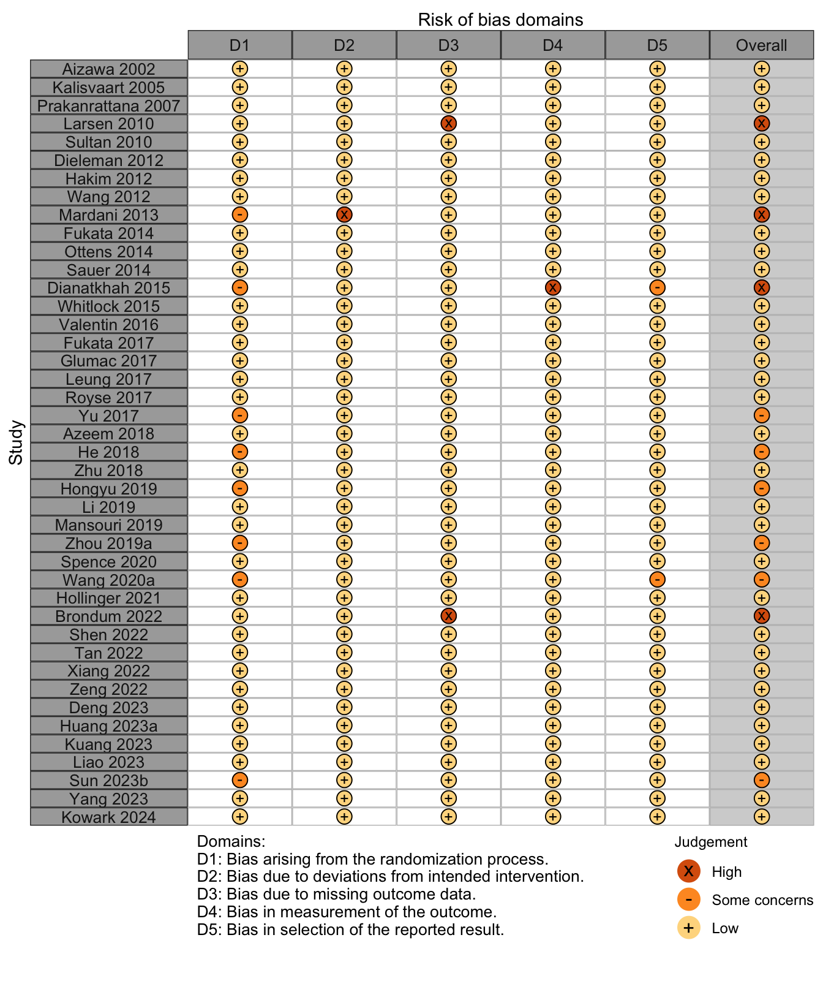
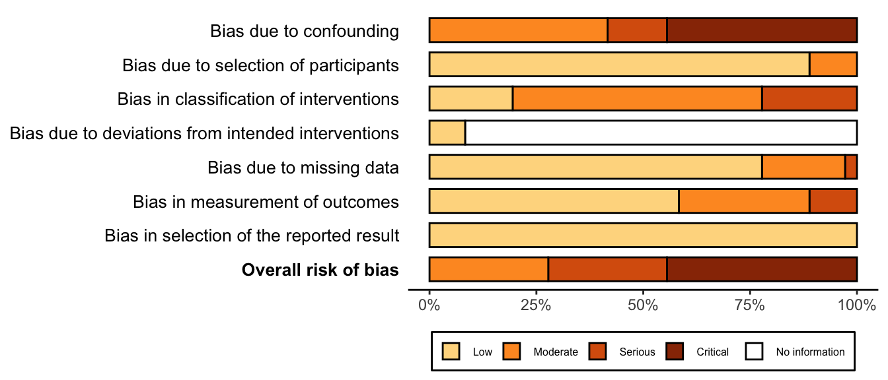
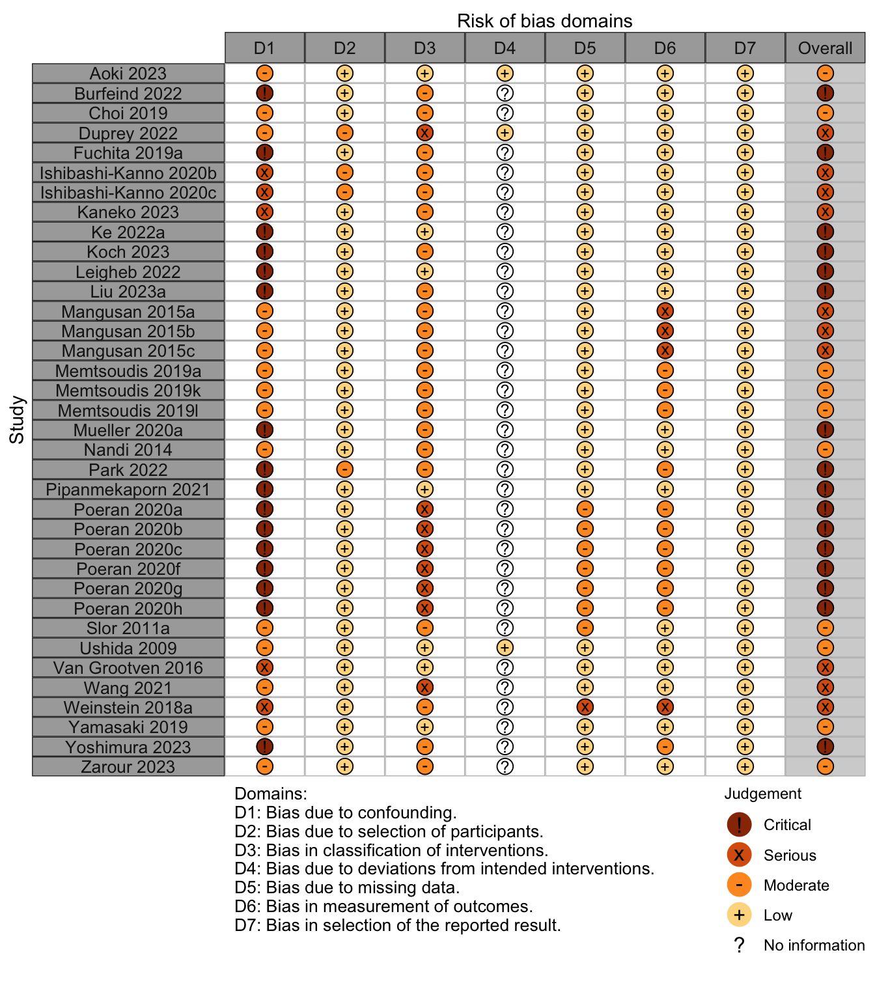

| Outcome | RCT, N = 41 | Crossover, N = 1 | NR Trial, N = 1 | Quasi-exp, N = 2 | Prosp Coh, N = 6 | Retro Coh, N = 36 | Case-Cont, N = 2 |
|---|---|---|---|---|---|---|---|
| ADL | 1 (2.4%) | — | — | — | — | — | — |
| Complications | 20 (49%) | — | — | — | — | 1 (2.8%) | 1 (50%) |
| DNCR/PND | 10 (24%) | — | — | — | — | — | — |
| Delirium | 26 (63%) | 1 (100%) | 1 (100%) | 2 (100%) | 6 (100%) | 35 (97%) | 2 (100%) |
| Delirium duration | 1 (2.4%) | — | — | — | — | — | — |
| Discharge location | 1 (2.4%) | — | — | — | — | 1 (2.8%) | — |
| Mortality | 10 (24%) | 1 (100%) | — | — | — | 3 (8.3%) | 1 (50%) |
| Opioid use | — | — | — | — | — | — | — |
| Pain | — | — | — | — | — | — | — |
| QoR | 1 (2.4%) | — | — | — | — | — | — |
| Readmission | — | — | — | — | — | — | — |
| Satisfaction | — | — | — | — | — | — | — |
| RCT: randomized clinical trial; Crossover: crossover trial; NR Trial: non-randomized trial; Quasi-exp: before-after or time series; Prosp Coh: prospective cohort; Retro Coh: retrospective cohort; Case-Cont: case-control. | |||||||
Potentially Inappropriate Medications
Key Question
Among older patients undergoing surgery and anesthesia, do commonly used potentially inappropriate medications administered during the perioperative period increase the risk of postoperative delirium or other adverse outcomes?
Outcomes Reported
Table 2. Dichotomous and count outcomes.
Table 3. Publications reporting continuous outcomes (not necessarily unique studies).
| Outcome | RCT, N = 41 | Crossover, N = 1 | NR Trial, N = 1 | Quasi-exp, N = 2 | Prosp Coh, N = 6 | Retro Coh, N = 36 | Case-Cont, N = 2 |
|---|---|---|---|---|---|---|---|
| Delirium duration | 6 (15%) | — | — | — | 1 (17%) | — | — |
| Length of stay | 13 (32%) | 1 (100%) | — | — | — | 2 (5.6%) | 1 (50%) |
| Opioid use | 2 (4.9%) | — | — | — | — | — | — |
| RCT: randomized clinical trial; Crossover: crossover trial; NR Trial: non-randomized trial; Quasi-exp: before-after or time series; Prosp Coh: prospective cohort; Retro Coh: retrospective cohort; Case-Cont: case-control. | |||||||
Table 4. Likert and ordinal outcomes.
| Outcome | RCT, N = 41 | Crossover, N = 1 | NR Trial, N = 1 | Quasi-exp, N = 2 | Prosp Coh, N = 6 | Retro Coh, N = 36 | Case-Cont, N = 2 |
|---|---|---|---|---|---|---|---|
| ADL | 1 (2.4%) | — | — | — | — | — | — |
| DNCR/PND | 15 (37%) | — | — | — | — | — | — |
| Delirium | 6 (15%) | — | — | 1 (50%) | — | — | — |
| Complications | — | — | — | — | — | — | — |
| Pain | 3 (7.3%) | — | — | — | — | 1 (2.8%) | — |
| Quality of life | — | — | — | — | — | — | — |
| QoR | 1 (2.4%) | — | — | — | — | — | — |
| Satisfaction | 1 (2.4%) | — | — | — | — | — | — |
| RCT: randomized clinical trial; Crossover: crossover trial; NR Trial: non-randomized trial; Quasi-exp: before-after or time series; Prosp Coh: prospective cohort; Retro Coh: retrospective cohort; Case-Cont: case-control. | |||||||
Included Studies
Table 5. Number of studies by design.
| Design | Studies |
|---|---|
| Randomized Clinical Trial | 39 |
| Randomized Cluster Crossover Trial | 1 |
| Nonrandomized Trial | 1 |
| Before-After/Time Series | 2 |
| Prospective Cohort | 6 |
| Retrospective Cohort | 14 |
| Case-Control | 2 |
| Total | 65 |
| Studies with multiple publications counted only once (applies to 3 trials with 2 publications [see next table]). | |
Design, centers, country, surgery
Table 6. Study design, enrollment, centers, country, and surgery (see References for citations).
| ID | Study | Centers | Enrolled | Countrya | Drug Class | Surgery |
|---|---|---|---|---|---|---|
| Randomized Clinical Trial | ||||||
| 1505 | 1 | 90 | Chinaa | Anticholinergics |
Thoracic |
|
| 8574 | 1 | 430 | Netherlands | Antipsychotics |
Ortho |
|
| 16607 | 1 | 126 | Thailand | Antipsychotics |
Cardiac |
|
| 7098 | 1 | 495 | USA | Antipsychotics |
Ortho |
|
| 4824 | 1 | 101 | Egypta | Antipsychotics |
Cardiac |
|
| 9196 | 2 | 457 | Chinaa | Antipsychotics |
GI/Abdominal |
|
| 8864 | 5 | 121 | Japan | Antipsychotics |
GI/Abdominal |
|
| 7309 | 3 | 201 | Japan | Antipsychotics |
GI/Abdominal |
|
| 1937 | 2 | 143 | Switzerland | Antipsychotics |
Variousb |
|
| 9620 | 1 | 42 | Japan | Benzodiazepine (la) |
GI/Abdominal |
|
| 17055 | 1 | 145 | Irana | Benzodiazepine (la) |
Cardiac |
|
| 5164 | 1 | 152 | Egypta | Benzodiazepine (sa) |
Ortho |
|
| 13731 | 1 | 92 | Chinaa | Benzodiazepine (sa) |
Thoracic |
|
| 13579 | 1 | 70 | Egypta | Benzodiazepine (sa) |
Cardiac |
|
| 13568 | 1 | 90 | Chinaa | Benzodiazepine (sa) |
Thoracic |
|
| 1117 | 1 | 150 | Irana | Benzodiazepine (sa) |
Ophtho |
|
| 742 | 1 | 164 | Chinaa | Benzodiazepine (sa) |
Ortho |
|
| 1625 | 1 | 44 | Chinaa | Benzodiazepine (sa) |
Oralmax |
|
| 9157 | 1 | 99 | Chinaa | Benzodiazepine (sa) |
GI/Abdominal |
|
| 18582 | 1 | 104 | Chinaa | Benzodiazepine (sa) |
GI/Abdominal |
|
| 18346 | 2 | 108 | Chinaa | Benzodiazepine (sa) |
Ortho |
|
| 18820 | 1 | 120 | Chinaa | Benzodiazepine (sa) |
Ortho |
|
| 18927 | 1 | 320 | Chinaa | Benzodiazepine (sa) |
Ortho |
|
| 18548 | 1 | 88 | Chinaa | Benzodiazepine (sa) |
Thoracic |
|
| 20898 | 9 | 616 | Germany | Benzodiazepine (sa) |
Variousb |
|
| 16533 | 8 | 4,494 | Netherlands | Corticosteroids |
Cardiac |
|
| 14006 | 1 | 110 | Irana | Corticosteroids |
Cardiac |
|
| 10036 | 1 | 737 | Netherlands | Corticosteroids |
Cardiac |
|
| 10075 | 3 | 291 | Netherlands | Corticosteroids |
Cardiac |
|
| 10515 | 80 | 7,507 | Canada | Corticosteroids |
Cardiac |
|
| 20581 | 1 | 140 | Brazila | Corticosteroids |
GI/Abdominal |
|
| 2778 | 1 | 169 | Croatia | Corticosteroids |
Cardiac |
|
| 3250 | 3 | 555 | Australia | Corticosteroids |
Cardiac |
|
| 7686 | 1 | 174 | Chinaa | Corticosteroids |
GI/Abdominal |
|
| 17365 | 1 | 39 | Denmark | Corticosteroids |
GI/Abdominal |
|
| 18178 | 1 | 60 | Chinaa | Corticosteroids |
Ortho |
|
| 18474 | 1 | 160 | Chinaa | Corticosteroids |
Ortho |
|
| 2730 | 1 | 750 | USA | Gabapentin |
Ortho |
|
| 5765 | 1 | 178 | Chinaa | NSAIDs |
Ortho |
|
| 5809 | 1 | 180 | Chinaa | NSAIDs |
Ortho |
|
| 17987 | 1 | 120 | Chinaa | NSAIDs |
Thoracic |
|
| Randomized Cluster Crossover Trial | ||||||
| 5365 | 2 | 800 | Canada | Benzodiazepine (sa) |
Cardiac |
|
| Before-After/Time Series | ||||||
| 9464 | 1 | 122 | Japan | Corticosteroids |
Ortho |
|
| 10090 | 1 | 21 | Japan | H2 blockers |
GI/Abdominal |
|
| Nonrandomized Trial | ||||||
| 750 | 5 | 86 | Belgium | Benzodiazepine (ns) |
Ortho |
|
| Prospective Cohort | ||||||
| 2985 | 1 | 429 | Thailand | Benzodiazepine (ns) |
Variousb |
|
| 7722 | 2 | 566 | USA | Benzodiazepine (ns) |
Non-cardiac |
|
| 1332 | 1 | 1,266 | USA | Benzodiazepine (sa) |
Variousb |
|
| 7522 | 1 | 83 | Italy | Benzodiazepine (sa) |
Ortho |
|
| 6840 | 4 | 98 | Singapore | Benzodiazepine (sa) |
Other |
|
| 16970 | 1 | 222 | Japan | Benzodiazepine (sa) |
Cardiac |
|
| Retrospective Cohort | ||||||
| 17141 | 1 | 526 | Netherlands | Anticholinergics |
Ortho |
|
| 17142 | 2 | 651 | Germany | Antipsychotics |
Gyn |
|
| 18984 | 527,254 | USA | Benzodiazepine (any) |
Ortho |
||
| 5163 | 4,400 | 564,226 | USA | Benzodiazepine (any) |
Ortho |
|
| 17134 | 4,400 | 1,130,569 | USA | Benzodiazepine (any) |
Ortho |
|
| 20892 | 4,400 | 564,226 | USA | Benzodiazepine (any) |
Ortho |
|
| 20893 | 4,400 | 1,130,569 | USA | Benzodiazepine (any) |
Ortho |
|
| 18983 | 527,254 | USA | Benzodiazepine (la) |
Ortho |
||
| 17140 | 1 | 526 | Netherlands | Benzodiazepine (ns) |
Ortho |
|
| 3727 | 1 | 656 | USA | Benzodiazepine (ns) |
Cardiac |
|
| 4888 | 1 | 41,766 | USA | Benzodiazepine (ns) |
Ortho |
|
| 17143 | 1 | 41,766 | USA | Benzodiazepine (ns) |
Ortho |
|
| 8003 | 1 | 84 | USA | Benzodiazepine (ns) |
Thoracic |
|
| 20896 | 1 | 69 | Japan | Benzodiazepine (ns) |
Headneck |
|
| 118 | 2 | 651 | Germany | Benzodiazepine (sa) |
Gyn |
|
| 17228 | 527,254 | USA | Benzodiazepine (sa) |
Ortho |
||
| 18509 | 1 | 98 | Japan | Benzodiazepine (sa) |
Cardiac |
|
| 18938 | 1,730 | 16,185 | Japan | Benzodiazepine (sa) |
Cardiac |
|
| 17038 | 1 | 195 | Chinaa | Benzodiazepine (sa) |
Urol |
|
| 16961 | 1 | 1,058 | Germany | Benzodiazepine (sa) |
Variousb |
|
| 18945 | 1 | 1,973 | Israel | Benzodiazepine (sa) |
Variousb |
|
| 17148 | 1 | 84 | USA | Corticosteroids |
Thoracic |
|
| 18976 | 527,254 | USA | Corticosteroids |
Ortho |
||
| 17006 | 1 | 1,627 | USA | Corticosteroids |
Variousb |
|
| 16714 | 900 | 237,872 | USA | Gabapentin |
Variousb |
|
| 20897 | 1 | 69 | Japan | H2 blockers |
Headneck |
|
| 20894 | 1 | 656 | USA | NSAIDs |
Cardiac |
|
| 18977 | 527,254 | USA | NSAIDs |
Ortho |
||
| 20895 | 1 | 656 | USA | Nonbenzodiazepine hypnotics |
Cardiac |
|
| 18985 | 527,254 | USA | Nonbenzodiazepine hypnotics |
Ortho |
||
| Case-Control | ||||||
| 9279 | 1 | 463 | USA | Benzodiazepine (ns) |
Ortho |
|
| 9977 | 1 | 58 | South Korea | Corticosteroids |
Thoracic |
|
| Antichol: anticholinergics; Antipsych: antipsychotics; la: long-acting; sa: short-acting; ns: not stated; GI: gastrointestinal; Ortho: orthopedic; Neuro: neurological; Oralmax: oral maxillofacial; Vasc: vascular. | ||||||
| a Non very-high Human Development Index country. | ||||||
| b Described as various or more than 4 different types of surgery. | ||||||
Country Summary
Table 7. Summary of studies by country where conducted.
| N = 65a | |
|---|---|
| Country | |
| China | 19 (29%) |
| USA | 12 (18%) |
| Japan | 9 (14%) |
| Egypt | 3 (4.6%) |
| Germany | 3 (4.6%) |
| Iran | 3 (4.6%) |
| Netherlands | 3 (4.6%) |
| Thailand | 2 (3.1%) |
| Australia | 1 (1.5%) |
| Belgium | 1 (1.5%) |
| Brazil | 1 (1.5%) |
| Canada | 1 (1.5%) |
| Croatia | 1 (1.5%) |
| Denmark | 1 (1.5%) |
| Israel | 1 (1.5%) |
| Italy | 1 (1.5%) |
| Singapore | 1 (1.5%) |
| South Korea | 1 (1.5%) |
| Switzerland | 1 (1.5%) |
| a n (%) | |
Drugs by Study
Benzodiazepines
Table 8. Studies examining benzodiazepines, dose, and timing according to study design.
| Benzodiazepines (short-acting) | ||||||||||||
|---|---|---|---|---|---|---|---|---|---|---|---|---|
| Study | N | Drug | ASA | Anesthetic | Ageb | MMSEb | Dosing | Timingc | Surgery | |||
| PSa | Vol | TIVA | Reg | Sed | ||||||||
| Randomized Clinical Trial | ||||||||||||
| 49 | None | 123 | ✓ | 72.3 (6.4) |
Ortho | |||||||
| 53 | Melatonin | 123 | ✓ | 70.4 (7.1) |
||||||||
| 50 | Midazolam | 123 | ✓ | 69.9 (8.2) |
7.5mg (qd×2d) | ▆▁▁ |
||||||
| 46 | Dexmedetomidine | 12 | ✓ | 68.7 (4.3) |
29.8 (0.7) |
Thoracic | ||||||
| 46 | Midazolam | 12 | ✓ | 69.1 (4.9) |
29.8 (0.7) |
0.05ug/kg (bid×1d) | ▁▆▁ |
|||||
| 30 | Placebo | 123 | ✓ | ✓ | 83.2 (5.1) |
Thoracic | ||||||
| 30 | Dexmedetomidine | 123 | ✓ | ✓ | 82.5 (5.4) |
|||||||
| 30 | Midazolam | 123 | ✓ | ✓ | 81.9 (6.2) |
0.03mg/kg (qd×1d) | ▆▁▁ |
|||||
| 30 | Dexmedetomidine | NR | ✓ | 65.3 (4.8) |
Cardiac | |||||||
| 30 | Midazolam | NR | ✓ | 66.7 (5.6) |
0.05mg/kg | |||||||
| 55 | Propofol | 123 | ✓ | 68.2 (6.4) |
Ortho | |||||||
| 55 | Dexmedetomidine | 123 | ✓ | 69.3 (7.1) |
||||||||
| 54 | Midazolam | 123 | ✓ | 66.9 (6.6) |
d | ▁▆▁ |
||||||
| 50 | Placebo | 12 | ✓ | 64.0 (7.2) |
Ophtho | |||||||
| 50 | Dexmedetomidine | 12 | ✓ | 66.5 (1.6) |
||||||||
| 50 | Midazolam | 12 | ✓ | 63.6 (8.3) |
0.1mg/kg (qd×1d) | ▁▆▁ |
||||||
| 20 | Dexmedetomidine | NR | ✓ | 60.0 (10.1) |
Oralmax | |||||||
| 20 | Midazolam | NR | ✓ | 60.5 (8.2) |
0.03mg/kg (1d) | |||||||
| 33 | Propofol | 12 | ✓ | 66.2 (5.0) |
GI/Abd | |||||||
| 33 | Remimazolam | 123 | ✓ | 66.4 (4.8) |
0.1mg/kg (qd×1d) | ▁▆▁ |
||||||
| 33 | Remimazolam | 123 | ✓ | 65.5 (5.2) |
0.2mg/kg (qd×1d) | ▁▆▁ |
||||||
| 53 | Dexmedetomidine | 23 | ✓ | 71.8 (5.5) |
Ortho | |||||||
| 52 | Remimazolam | 23 | ✓ | 70.8 (4.4) |
0.025mg/kg (qd×1d) | ▁▆▁ |
||||||
| 42 | Propofol | 12 | ✓ | 65.2 (4.4) |
Thoracic | |||||||
| 42 | Remimazolam | 12 | ✓ | 65.4 (3.9) |
0.3mg/kg (qd) | ▁▆▁ |
||||||
| 35 | Placebo | NR | ✓ | 69.7 (2.5) |
27.7 (1.9) |
GI/Abd | ||||||
| 35 | Dexmedetomidine | NR | ✓ | 71.3 (3.6) |
27.8 (2.1) |
|||||||
| 34 | Remimazolam | NR | ✓ | 70.1 (3.6) |
27.7 (1.7) |
0.2mg/kg (qd) | ▁▆▁ |
|||||
| 51 | None | 123 | ✓ | 72.4 (5.7) |
Ortho | |||||||
| 53 | Remimazolam | 123 | ✓ | 71.8 (6.2) |
0.1mg/kg | ▁▆▁ |
||||||
| 153 | Placebo | 123 | ✓ | 68.0 |
26.0 |
Ortho | ||||||
| 147 | Remimazolam | 123 | ✓ | 68.0 |
26.0 |
0.25mg/kg (qd×1d) | ▁▆▁ |
|||||
| 303 | Placebo | 1234 | 72.3 (4.4) |
Various | ||||||||
| 304 | Midazolam | 1234 | 71.5 (4.4) |
3.75mg (qd×1d) | ▆▁▁ |
|||||||
| Randomized Cluster Crossover Trial | ||||||||||||
| 389 | Midazolam (liberal)e | NR | 67.2 (10.0) |
5.2mg f | ▆▆▆ |
Cardiac | ||||||
| 411 | Midazolam (restricted)e | NR | 66.7 (11.3) |
4.6mg f | ▆▆▆ |
|||||||
| Prospective Cohort | ||||||||||||
| 357 | None | 1234 | 74.5 (6.6) |
Various | ||||||||
| 357 | Midazolam | 1234 | 74.1 (4.2) |
1.99mg f | ▆▁▁ |
|||||||
| 91 | None | NR | Other | |||||||||
| 7 | Midazolam | NR | ▁▆▁ |
|||||||||
| 36 | None | 1234 | Ortho | |||||||||
| 47 | Midazolam | 1234 | 0.5-1.0mg | ▆▁▁ |
||||||||
| 124 | None | 23 | ✓ | ✓ | 77.2 (5.9) |
28.0 (1.7) |
Cardiac | |||||
| 76 | Remimazolam | 23 | ✓ | 77.7 (6.1) |
28.0 (1.5) |
NR | ▁▆▁ |
|||||
| Retrospective Cohort | ||||||||||||
| 107,736 | None | NR | Ortho | |||||||||
| 373,219 | Benzodiazepine (any sa) | NR | NR | ▁▆▆ |
||||||||
| 15,329 | Benzodiazepine (any la) | NR | NR | ▁▆▆ |
||||||||
| 67,942 | Benzodiazepine (any sa/la) | NR | NR | ▁▆▆ |
||||||||
| 175,288 | None | NR | Ortho | |||||||||
| 778,956 | Benzodiazepine (any sa) | NR | NR | ▁▆▆ |
||||||||
| 25,667 | Benzodiazepine (any la) | NR | NR | ▁▆▆ |
||||||||
| 150,658 | Benzodiazepine (any sa/la) | NR | NR | ▁▆▆ |
||||||||
| 82 | None | 1234 | 71.8 (4.9) |
28.6 (4.9) |
Various | |||||||
| 529 | Midazolam | 1234 | 71.8 (4.9) |
28.6 (4.9) |
6.1mg | ▆▁▁ |
||||||
| 338,015 | None | NR | ✓ | ✓ | ✓ | Ortho | ||||||
| 167,137 | Midazolam | NR | ✓ | ✓ | ✓ | ▆▁▆ |
||||||
| 1,001 | None | 1234 | 69.7 (6.3) |
28.9 (1.4) |
Various | |||||||
| 57 | Midazolam | 1234 | 69.7 (6.3) |
28.9 (1.4) |
NR | ▆▁▁ |
||||||
| 50 | None | 1234 | 68.0 [66-72] |
Urol | ||||||||
| 145 | Midazolam | 1234 | 68.0 [66-72] |
NR | ▁▆▁ |
|||||||
| 58 | Placebo | NR | ✓ | 84.0 {81-87} |
26 {23-27} |
Cardiac | ||||||
| 40 | Remimazolam | NR | ✓ | 84.0 {81-88} |
25 {24-28} |
3mg/kg (1d) | ▁▆▁ |
|||||
| 5,552 | None | NR | Cardiac | |||||||||
| 10,633 | Midazolam | NR | ▆▁▁ |
|||||||||
| 1,191 | None | 1234 | 77.0 {73-82} |
Various | ||||||||
| 782 | Midazolam | 1234 | 74.0 {72-78} |
▆▁▁ |
||||||||
| PS: physical status; Vol: volatile; TIVA: total intravenous anesthesia; Reg: regional; Sed: sedation; MMSE: Mini-Mental State Exam; THA: total hip arthroplasty; TKA: total knee arthroplasty. | ||||||||||||
| a ASA Physical Status of patients included (proportions can be found here[link to table add]). | ||||||||||||
| b Mean Med (SD)[Range]{IQR}. | ||||||||||||
| c Bars indicate adminstration times from left to right: preoperative, induction/intraoperative, and postoperative (includes PACU). | ||||||||||||
| d Dose adjusted to maintain light sedation. | ||||||||||||
| e Liberal or restricted administration relevant to intraoperative period. | ||||||||||||
| f Mean intraoperative dose. | ||||||||||||
| Benzodiazepines (long-acting) | ||||||||||||
|---|---|---|---|---|---|---|---|---|---|---|---|---|
| Study | N | Drug | ASA | Anesthetic | Ageb | MMSEb | Dosing | Timingc | Surgery | |||
| PSa | Vol | TIVA | Reg | Sed | ||||||||
| Randomized Clinical Trial | ||||||||||||
| 20 | None | NR | ✓ | ✓ | 76.2 (4.1) |
GI/Abd | ||||||
| 20 | Flunitrazepam | NR | ✓ | ✓ | 75.9 (4.5) |
0.4mg/kg (qd×3d) | ▆▁▁ |
|||||
| 66 | Melatonin | NR | 60.0 (10.2) |
Cardiac | ||||||||
| 71 | Oxazepam | NR | 61.7 (9.9) |
10mg (qd×10d) | ▆▁▆ |
|||||||
| Retrospective Cohort | ||||||||||||
| 107,736 | None | NR | Ortho | |||||||||
| 373,219 | Benzodiazepine (any sa) | NR | NR | ▁▆▆ |
||||||||
| 15,329 | Benzodiazepine (any la) | NR | NR | ▁▆▆ |
||||||||
| 67,942 | Benzodiazepine (any sa/la) | NR | NR | ▁▆▆ |
||||||||
| 175,288 | None | NR | Ortho | |||||||||
| 778,956 | Benzodiazepine (any sa) | NR | NR | ▁▆▆ |
||||||||
| 25,667 | Benzodiazepine (any la) | NR | NR | ▁▆▆ |
||||||||
| 150,658 | Benzodiazepine (any sa/la) | NR | NR | ▁▆▆ |
||||||||
| 450,479 | None | NR | ✓ | ✓ | ✓ | Ortho | ||||||
| 54,673 | Benzo_long | NR | ✓ | ✓ | ✓ | ▆▁▆ |
||||||
| PS: physical status; Vol: volatile; TIVA: total intravenous anesthesia; Reg: regional; Sed: sedation; MMSE: Mini-Mental State Exam. | ||||||||||||
| a ASA Physical Status of patients included (proportions can be found here[link to table add]). | ||||||||||||
| b Mean Med (SD)[Range]{IQR}. | ||||||||||||
| c Bars indicate adminstration times from left to right: preoperative, induction/intraoperative, and postoperative (includes PACU). | ||||||||||||
| Benzodiazepine (any or not specified) | ||||||||||||
|---|---|---|---|---|---|---|---|---|---|---|---|---|
| Study | N | Drug | ASA | Anesthetic | Ageb | MMSEb | Dosing | Timingc | Surgery | |||
| PSa | Vol | TIVA | Reg | Sed | ||||||||
| Retrospective Cohort | ||||||||||||
| 96 | None | NR | Ortho | |||||||||
| 430 | Benzodiazepine (ns sa/la) | NR | NR | d Unspecified |
||||||||
| 424 | None | NR | 66.5 (10.8) |
Cardiac | ||||||||
| 232 | Benzodiazepine (ns sa/la) | NR | 66.5 (10.8) |
NR | ▁▁▆ |
|||||||
| 2,643 | None | NR | ✓ | Ortho | ||||||||
| 33,223 | Benzodiazepine (ns sa/la) | NR | ✓ | ▁▆▁ |
||||||||
| 33,500 | None | NR | ✓ | Ortho | ||||||||
| 3,451 | Benzodiazepine (ns sa/la) | NR | ✓ | ▁▁▆ |
||||||||
| 107,736 | None | NR | Ortho | |||||||||
| 373,219 | Benzodiazepine (any sa) | NR | NR | ▁▆▆ |
||||||||
| 15,329 | Benzodiazepine (any la) | NR | NR | ▁▆▆ |
||||||||
| 67,942 | Benzodiazepine (any sa/la) | NR | NR | ▁▆▆ |
||||||||
| 3 | None | NR | 61.7 (10.5) |
Thoracic | ||||||||
| 81 | Benzo_ns | NR | 61.7 (10.5) |
▁▆▁ |
||||||||
| 175,288 | None | NR | Ortho | |||||||||
| 778,956 | Benzodiazepine (any sa) | NR | NR | ▁▆▆ |
||||||||
| 25,667 | Benzodiazepine (any la) | NR | NR | ▁▆▆ |
||||||||
| 150,658 | Benzodiazepine (any sa/la) | NR | NR | ▁▆▆ |
||||||||
| 428,543 | None | NR | Ortho | |||||||||
| 135,683 | Benzodiazepine (any sa/la) | NR | NR | ▁▆▆ |
||||||||
| 861,439 | None | NR | Ortho | |||||||||
| 269,130 | Benzodiazepine (any sa/la) | NR | NR | ▁▆▆ |
||||||||
| 455,116 | None | NR | ✓ | ✓ | ✓ | Ortho | ||||||
| 50,036 | Benzodiazepine (any sa/la) | NR | ✓ | ✓ | ✓ | ▆▁▆ |
||||||
| 33 | None | NR | 62.9 (11.9) |
Headneck | ||||||||
| 36 | Benzo_ns | NR | 62.9 (11.9) |
▁▁▆ |
||||||||
| Case-Control | ||||||||||||
| 376 | None | NR | Ortho | |||||||||
| 87 | Benzodiazepine (ns sa/la) | NR | ▁▆▆ |
|||||||||
| Nonrandomized Trial | ||||||||||||
| 62 | None | NR | 80.1 (6.8) |
Ortho | ||||||||
| 24 | Benzodiazepine (ns sa/la) | NR | 80.1 (6.8) |
NR | d Unspecified |
|||||||
| Prospective Cohort | ||||||||||||
| 173 | None | NR | Various | |||||||||
| 256 | Benzodiazepine (ns sa/la) | NR | ▆▁▁ |
|||||||||
| e | Antipsychotic (any) | NR | 76.6 (5.0) |
NR | ▁▁▆ |
Various | ||||||
| e | Benzodiazepine (ns sa/la) | NR | 76.6 (5.0) |
NR | ▁▁▆ |
|||||||
| PS: physical status; Vol: volatile; TIVA: total intravenous anesthesia; Reg: regional; Sed: sedation; MMSE: Mini-Mental State Exam; THA: total hip arthroplasty; TKA: total knee arthroplasty. | ||||||||||||
| a ASA Physical Status of patients included (proportions can be found here[link to table add]). | ||||||||||||
| b Mean Med (SD)[Range]{IQR}. | ||||||||||||
| c Bars indicate adminstration times from left to right: preoperative, induction/intraoperative, and postoperative (includes PACU). | ||||||||||||
| d Not specified. | ||||||||||||
| e Reported only results from proportional hazards models. | ||||||||||||
Antipsychotics
Table 9. Studies examining antipsychotics, dose, and timing according to study design.
| Antipsychotics | ||||||||||||
|---|---|---|---|---|---|---|---|---|---|---|---|---|
| Study | N | Drug | ASA | Anesthetic | Ageb | MMSEb | Dosing | Timingc | Surgery | |||
| PSa | Vol | TIVA | Reg | Sed | ||||||||
| Randomized Clinical Trial | ||||||||||||
| 218 | Placebo | NR | 79.6 (6.3) |
24.5 (4.2) |
Ortho | |||||||
| 212 | Haloperidol | NR | 78.7 (6.0) |
25.0 (6.8) |
0.5mg (tid×5d) | ▆▁▁ |
||||||
| 63 | Placebo | NR | ✓ | ✓ | 60.7 (9.8) |
Cardiac | ||||||
| 63 | Risperidone | NR | ✓ | ✓ | 61.3 (9.7) |
1mg (qd×1d) | ||||||
| 204 | Placebo | 123 | ✓ | ✓ | 74.0 (6.2) |
Ortho | ||||||
| 196 | Olanzapine | 123 | ✓ | ✓ | 73.4 (6.1) |
5mg (bid×1d) | ▆▁▁ |
|||||
| 50 | Placebo | NR | ✓ | Cardiac | ||||||||
| 51 | Risperidone | NR | ✓ | 0.5mg (bid) | ||||||||
| 228 | Placebo | 234 | 74.4 (7.0) |
Various | ||||||||
| 229 | Haloperidol | 234 | 74.0 (5.8) |
5mg (qd×1d) | ||||||||
| 62 | None | NR | 80.2 (3.9) |
23.0 (5.4) |
Various | |||||||
| 59 | Haloperidol | NR | 80.5 (3.8) |
23.3 (6.4) |
2.5mg (qd×3d) | |||||||
| 100 | None | NR | 81.3 (4.3) |
25.1 (5.6) |
Various | |||||||
| 101 | Haloperidol | NR | 82.0 (4.4) |
24.6 (5.2) |
5mg (qd×6d) | |||||||
| 44 | Placebo | NR | 74.8 (6.6) |
28.3 (2.3) |
Various | |||||||
| 47 | Ketamine | NR | 73.4 (6.1) |
27.7 (1.7) |
||||||||
| 45 | Haloperidol | NR | 73.4 (6.3) |
28.0 (1.3) |
5ug/kg (qd×1d) | ▁▆▁ |
||||||
| Retrospective Cohort | ||||||||||||
| 558 | None | 1234 | 71.8 (31.5) |
28.6 (4.9) |
Various | |||||||
| 92 | Haloperidol | 1234 | 71.8 (4.9) |
28.6 (4.9) |
▁▁▆ |
|||||||
| Prospective Cohort | ||||||||||||
| d | Antipsychotic (any) | NR | 76.6 (5.0) |
NR | ▁▁▆ |
Various | ||||||
| d | Benzodiazepine (ns sa/la) | NR | 76.6 (5.0) |
NR | ▁▁▆ |
|||||||
| PS: physical status; Vol: volatile; TIVA: total intravenous anesthesia; Reg: regional; Sed: sedation; MMSE: Mini-Mental State Exam. | ||||||||||||
| a ASA Physical Status of patients included (proportions can be found here[link to table add]). | ||||||||||||
| b Mean Med (SD)[Range]{IQR}. | ||||||||||||
| c Bars indicate adminstration times from left to right: preoperative, induction/intraoperative, and postoperative (includes PACU). | ||||||||||||
| d Reported only results from proportional hazards models. | ||||||||||||
Anticholinergics
Table 10. Studies examining anticholinergics, dose, and timing according to study design.
| Anticholinergic drugs | ||||||||||||
|---|---|---|---|---|---|---|---|---|---|---|---|---|
| Study | N | Drug | ASA | Anesthetic | Ageb | MMSEb | Dosing | Timingc | Surgery | |||
| PSa | Vol | TIVA | Reg | Sed | ||||||||
| Retrospective Cohort | ||||||||||||
| 480 | None | NR | Ortho | |||||||||
| 46 | Anticholinergic (any) | NR | NR | d Unspecified |
||||||||
| Randomized Clinical Trial | ||||||||||||
| 30 | Placebo | 123 | ✓ | 69.1 (8.3) |
27.1 (2.6) |
Thoracic | ||||||
| 30 | Penehyclidine | 123 | ✓ | 72.4 (5.7) |
27.8 (2.1) |
0.01mg/kg (qd×1d) | ▆▁▁ |
|||||
| PS: physical status; Vol: volatile; TIVA: total intravenous anesthesia; Reg: regional; Sed: sedation; MMSE: Mini-Mental State Exam. | ||||||||||||
| a ASA Physical Status of patients included (proportions can be found here[link to table add]). | ||||||||||||
| b Mean Med (SD)[Range]{IQR}. | ||||||||||||
| c Bars indicate adminstration times from left to right: preoperative, induction/intraoperative, and postoperative (includes PACU). | ||||||||||||
| d Not specified. | ||||||||||||
Corticosteroids
Table 11. Studies examining corticosteroids, dose, and timing according to study design.
| Corticosteroids | ||||||||||||
|---|---|---|---|---|---|---|---|---|---|---|---|---|
| Study | N | Drug | ASA | Anesthetic | Ageb | MMSEb | Dosing | Timingc | Surgery | |||
| PSa | Vol | TIVA | Reg | Sed | ||||||||
| Before-After/Time Series | ||||||||||||
| 81 | Methylprednisolone | NR | ✓ | ✓ | 69.8 [53-84] |
2500mg | ▁▆▁ |
Ortho | ||||
| 41 | Methylprednisolone | NR | ✓ | ✓ | 68.1 [52-86] |
2000mg | ▁▆▆ |
|||||
| Randomized Clinical Trial | ||||||||||||
| 2,247 | Placebo | NR | ✓ | ✓ | 66.1 (10.7) |
Cardiac | ||||||
| 2,235 | Dexamethasone | NR | ✓ | ✓ | 66.2 (11.0) |
1mg/kg (qd×1d) | ▁▆▁ |
|||||
| 50 | Placebo | NR | 60.0 (12.8) |
27.8 (3.1) |
Cardiac | |||||||
| 43 | Dexamethasone | NR | 64.5 (11.1) |
28.6 (3.1) |
8mg (tid×3d) | ▆▁▁ |
||||||
| 370 | Placebo | NR | 66.0 (12.0) |
Cardiac | ||||||||
| 367 | Dexamethasone | NR | 67.0 (12.0) |
1mg/kg (qd×1d) | ▁▆▁ |
|||||||
| 138 | Placebo | NR | ✓ | ✓ | 65.4 (11.5) |
Cardiac | ||||||
| 140 | Dexamethasone | NR | ✓ | ✓ | 63.4 (12.3) |
1mg/kg (qd×1d) | ▁▆▁ |
|||||
| 3,752 | Placebo | NR | 67.3 (13.8) |
Cardiac | ||||||||
| 3,755 | Methylprednisolone | NR | 67.5 (13.6) |
250mg (bid×1d) | ▁▆▁ |
|||||||
| 40 | None | NR | ✓ | 67.2 (5.2) |
23.5 (3.2) |
GI/Abd | ||||||
| 36 | Dexamethasone | NR | ✓ | 68.0 (6.3) |
25.2 (3.0) |
8mg (qd×1d) | ▁▆▁ |
|||||
| 81 | Placebo | NR | ✓ | 64.2 (9.4) |
28.3 (1.2) |
Cardiac | ||||||
| 80 | Dexamethasone | NR | ✓ | 63.7 (9.0) |
28.1 (1.2) |
0.1mg/kg (qd×1d) | ▆▁▁ |
|||||
| 246 | Placebo | NR | 74.3 (9.3) |
Cardiac | ||||||||
| 236 | Methylprednisolone | NR | 73.4 (10.5) |
250mg (bid×1d) | ▁▆▁ |
|||||||
| 84 | Placebo | 23 | ✓ | ✓ | 70.0 {68-73} |
23 {22-24} |
GI/Abd | |||||
| 84 | Methylprednisolone | 23 | ✓ | ✓ | 71.0 {68-74} |
22 {22-24} |
2mg/kg (qd×1d) | ▆▁▁ |
||||
| 16 | Placebo | 123 | ✓ | ✓ | 60.0 (15.0) |
GI/Abd | ||||||
| 17 | Methylprednisolone | 123 | ✓ | ✓ | 62.0 (9.2) |
125mg (qd) | ▁▆▁ |
|||||
| 30 | Placebo | 123 | ✓ | ✓ | 65.4 (7.6) |
Ortho | ||||||
| 30 | Dexamethasone | NR | ✓ | ✓ | 67.9 (8.6) |
5mg (qd×1d) | ▁▆▁ |
|||||
| 80 | Placebo | 1234 | ✓ | 85.0 {80-90} |
16 {14-23} |
Ortho | ||||||
| 80 | Dexamethasone | 1234 | ✓ | 84.5 {79-89} |
18 {13-22} |
10mg (qd×1d) | ▆▁▁ |
|||||
| Case-Control | ||||||||||||
| 16 | Methylprednisolone > 72h | 1234 | 71.0 {63-74} |
1.5mg/kg (qd×28d) | Thoracic | |||||||
| 42 | Methylprednisolone ≤ 72h | 1234 | 70.0 {61-72} |
1.5mg/kg (qd×28d) | ||||||||
| Retrospective Cohort | ||||||||||||
| 542,536 | None | NR | Ortho | |||||||||
| 21,690 | Corticosteroid (any) | NR | NR | ▁▆▆ |
||||||||
| 1,082,854 | None | NR | Ortho | |||||||||
| 47,715 | Corticosteroid (any) | NR | NR | ▁▆▆ |
||||||||
| 77 | None | NR | 61.7 (10.5) |
Thoracic | ||||||||
| 7 | Dexamethasone | NR | 61.7 (10.5) |
▁▆▁ |
||||||||
| 480,056 | None | NR | ✓ | ✓ | ✓ | Ortho | ||||||
| 25,096 | Methylprednisolone | NR | ✓ | ✓ | ✓ | ▆▁▆ |
||||||
| 74 | None | 1234 | ✓ | ✓ | ✓ | 76.9 (6.7) |
Various | |||||
| 417 | None | 1234 | ✓ | ✓ | ✓ | 76.9 (6.7) |
||||||
| 104 | Famotidine/Midzolam/Dexamethasone | 1234 | ✓ | ✓ | ✓ | 72.3 (5.6) |
▁▆▆ |
|||||
| 1,006 | Famotidine/Midzolam/Dexamethasone | 1234 | ✓ | ✓ | ✓ | 72.3 (5.6) |
▁▆▆ |
|||||
| PS: physical status; Vol: volatile; TIVA: total intravenous anesthesia; Reg: regional; Sed: sedation; MMSE: Mini-Mental State Exam. | ||||||||||||
| a ASA Physical Status of patients included (proportions can be found here[link to table add]). | ||||||||||||
| b Mean Med (SD)[Range]{IQR}. | ||||||||||||
| c Bars indicate adminstration times from left to right: preoperative, induction/intraoperative, and postoperative (includes PACU). | ||||||||||||
NSAIDs
Table 12. Studies examining NSAIDs, dose, and timing according to study design.
| NSAIDs | ||||||||||||
|---|---|---|---|---|---|---|---|---|---|---|---|---|
| Study | N | Drug | ASA | Anesthetic | Ageb | MMSEb | Dosing | Timingc | Surgery | |||
| PSa | Vol | TIVA | Reg | Sed | ||||||||
| Retrospective Cohort | ||||||||||||
| 369 | None | NR | 66.5 (10.8) |
Cardiac | ||||||||
| 287 | Ketoprofen | NR | 66.5 (10.8) |
NR | ▁▁▆ |
|||||||
| 309,921 | None | NR | Ortho | |||||||||
| 254,305 | NSAID (any) | NR | NR | ▁▆▆ |
||||||||
| 344,467 | None | NR | Ortho | |||||||||
| 219,759 | COX-2 inhibitor | NR | NR | ▁▆▆ |
||||||||
| 569,339 | None | NR | Ortho | |||||||||
| 561,230 | NSAID (any) | NR | NR | ▁▆▆ |
||||||||
| 710,381 | None | NR | Ortho | |||||||||
| 420,188 | COX-2 inhibitor | NR | NR | ▁▆▆ |
||||||||
| 436,131 | None | NR | ✓ | ✓ | ✓ | Ortho | ||||||
| 69,021 | NSAID (any) | NR | ✓ | ✓ | ✓ | ▆▁▆ |
||||||
| Randomized Clinical Trial | ||||||||||||
| 82 | Placebo | NR | ✓ | 70.8 (5.2) |
27.6 (2.7) |
Ortho | ||||||
| 81 | Celocoxib | NR | ✓ | 71.4 (5.6) |
28.1 (3.2) |
200mg (bid×7d) | ▆▁▁ |
|||||
| 60 | None | 12 | ✓ | 75.2 (5.3) |
28.9 (1.2) |
Ortho | ||||||
| 60 | Flurbiprofen | 12 | ✓ | 78.3 (6.1) |
50mg (qd×1d) | ▆▁▁ |
||||||
| 60 | Flurbiprofen | 12 | ✓ | 76.1 (5.9) |
28.1 (1.4) |
50mg (qd×1d) | ▁▆▁ |
|||||
| 60 | Placebo | 23 | ✓ | 68.4 (3.1) |
27.5 (2.0) |
Thoracic | ||||||
| 60 | Flurbiprofen | 23 | ✓ | 68.6 (2.9) |
27.2 (2.0) |
100mg (qd×1d) | ▁▆▁ |
|||||
| PS: physical status; Vol: volatile; TIVA: total intravenous anesthesia; Reg: regional; Sed: sedation; MMSE: Mini-Mental State Exam. | ||||||||||||
| a ASA Physical Status of patients included (proportions can be found here[link to table add]). | ||||||||||||
| b Mean Med (SD)[Range]{IQR}. | ||||||||||||
| c Bars indicate adminstration times from left to right: preoperative, induction/intraoperative, and postoperative (includes PACU). | ||||||||||||
Gabapentin
Table 14. Studies examining gabapentin, dose, and timing according to study design.
| Gabapentin | ||||||||||||
|---|---|---|---|---|---|---|---|---|---|---|---|---|
| Study | N | Drug | ASA | Anesthetic | Ageb | MMSEb | Dosing | Timingc | Surgery | |||
| PSa | Vol | TIVA | Reg | Sed | ||||||||
| Randomized Clinical Trial | ||||||||||||
| 347 | Placebo | 1234 | ✓ | ✓ | 73.0 (6.0) |
Various | ||||||
| 350 | Gabapentin | 1234 | ✓ | ✓ | 73.0 (6.0) |
900mg (tid×3d) | ▆▁▆ |
|||||
| Retrospective Cohort | ||||||||||||
| 118,936 | None | NR | 74.4 (6.8) |
Various | ||||||||
| 118,936 | Gabapentin | NR | 74.5 (6.7) |
▆▁▆ |
||||||||
| PS: physical status; Vol: volatile; TIVA: total intravenous anesthesia; Reg: regional; Sed: sedation; MMSE: Mini-Mental State Exam. | ||||||||||||
| a ASA Physical Status of patients included (proportions can be found here[link to table add]). | ||||||||||||
| b Mean Med (SD)[Range]{IQR}. | ||||||||||||
| c Bars indicate adminstration times from left to right: preoperative, induction/intraoperative, and postoperative (includes PACU). | ||||||||||||
Delirium Incidence
Benzodiazepines
Table 15. Delirium incidence and ascertainment during hospitalization in studies examining benzodiazepines.
| Benzodiazepines (short-acting) — randomized designs | ||||||||
|---|---|---|---|---|---|---|---|---|
| Study | N | Arm | Scale | Day(s)a | Incidence Proportion | RR (95% CI) | Surgery | |
| N (%) | 0 – 100% | |||||||
| Randomized Clinical Trial | ||||||||
| 49 | None | Other | 3 | 16 (32.7) | — |
Ortho | ||
| 53 | Melatonin | 5 (9.4) | 0.29 (0.11-0.73) |
|||||
| 50 | Midazolam | 22 (44.0) | 1.35 (0.81-2.24) |
|||||
| 46 | Dexmedetomidine | CAM | 3 | 3 (6.5) | — |
Thoracic | ||
| 46 | Midazolam | 10 (21.7) | 3.33 (0.98-11.33) |
|||||
| 30 | Dexmedetomidine | CAM | 7 | 1 (3.3) | — |
Cardiac | ||
| 30 | Midazolam | 2 (6.7) | 2.00 (0.19-20.90) |
|||||
| 30 | Placebo | CAM | Noteb | 15 (50.0) | — |
Thoracic | ||
| 30 | Dexmedetomidine | 7 (23.3) | 0.47 (0.22-0.98) |
|||||
| 30 | Midazolam | 17 (56.7) | 1.13 (0.70-1.82) |
|||||
| 20 | Dexmedetomidine | unspecified | Stay | 1 (5.0) | — |
Oralmax | ||
| 20 | Midazolam | 9 (45.0) | 9.00 (1.25-64.59) |
|||||
| 153 | Placebo | CAM | 3 | 19 (12.4) | — |
Ortho | ||
| 147 | Remimazolam | 23 (15.6) | 1.26 (0.72-2.21) |
|||||
| 303 | Placebo | CAM | 30 | 3 (1.0) | — |
Various | ||
| 304 | Midazolam | 4 (1.3) | 1.33 (0.30-5.89) |
|||||
| Randomized Cluster Crossover Trial | ||||||||
| 389 | Midazolam (liberal) | CAM | Stay | 55 (14.1) | — |
Cardiac | ||
| 411 | Midazolam (restricted) | 72 (17.5) | 1.24 (0.90-1.71) |
|||||
| RR: risk ratio; CAM: Confusion Assessment Method; NR: not reported. | ||||||||
| a Day(s) over which incidence proportion assessed. Stay indicates duration of hospitalization. | ||||||||
| b Maximum of reported daily incidence. | ||||||||
| Benzodiazepines (short-acting) — nonrandomized designs | ||||||||
|---|---|---|---|---|---|---|---|---|
| Study | N | Arm | Scale | Day(s)a | Incidence Proportion | RR aOR (95% CI) | Surgery | |
| N (%) | 0 – 100% | |||||||
| Retrospective Cohort | ||||||||
| 107,736 | None | Otherb | Stay | 2,844 (2.6) | — |
Ortho | ||
| 373,219 | Benzodiazepine (any sa) | 7,068 (1.9) | 0.79 (0.72-0.87) | |||||
| 15,329 | Benzodiazepine (any la) | 1,075 (7.0) | 2.10 (1.82-2.42) | |||||
| 67,942 | Benzodiazepine (any sa/la) | 3,798 (5.6) | 1.74 (1.56-1.94) | |||||
| 175,288 | None | Otherb | Stay | 4,783 (2.7) | — |
Ortho | ||
| 778,956 | Benzodiazepine (any sa) | 16,603 (2.1) | 0.82 (0.77-0.88) | |||||
| 25,667 | Benzodiazepine (any la) | 1,928 (7.5) | 2.24 (2.01-2.49) | |||||
| 150,658 | Benzodiazepine (any sa/la) | 9,070 (6.0) | 1.78 (1.64-1.92) | |||||
| 82 | None | CAM | 7 | 11 (13.4) | — |
Various | ||
| 529 | Midazolam | 51 (9.6) | 0.72 (0.39-1.32) |
|||||
| 338,015 | None | Otherb | Stay | 60,462 (17.9) | — |
Ortho | ||
| 167,137 | Midazolam | 19,085 (11.4) | 0.64 (0.63-0.65) |
|||||
| 58 | Placebo | CAM | 3 | 15 (25.9) | — |
Cardiac | ||
| 40 | Remimazolam | 3 (7.5) | 0.29 (0.09-0.94) |
|||||
| 1,001 | None | DSM | 7 | 184 (18.4) | — |
Various | ||
| 57 | Midazolam | 14 (24.6) | 1.34 (0.83-2.15) |
|||||
| 50 | None | Otherb | Stay | 5 (10.0) | — |
Urol | ||
| 145 | Midazolam | 14 (9.7) | 0.97 (0.37-2.54) |
|||||
| 1,191 | None | CAM/other | 2 | 187 (15.7) | — |
Various | ||
| 782 | Midazolam | 115 (14.7) | 0.94 (0.76-1.16) |
|||||
| Prospective Cohort | ||||||||
| 357 | None | CAM | Notec | 89 (24.9) | — |
Various | ||
| 357 | Midazolam | 83 (23.2) | 0.93 (0.72-1.21) |
|||||
| 91 | None | Otherb | Stay | 10 (11.0) | — |
Other | ||
| 7 | Midazolam | 1 (14.3) | 1.30 (0.19-8.75) |
|||||
| 36 | None | DRS | Stay | 5 (13.9) | — |
Ortho | ||
| 47 | Midazolam | 12 (25.5) | 1.84 (0.71-4.75) |
|||||
| 124 | None | CAM | 5 | 33 (26.6) | — |
Cardiac | ||
| 76 | Remimazolam | 23 (30.3) | 1.14 (0.73-1.78) |
|||||
| RR: risk ratio; aOR: adjusted odds ratio; ns: not specified; sa: short-acting; la: long-acting; CAM: Confusion Assessment Method; THA: total hip arthroplasty; TKA: total knee arthroplasty. | ||||||||
| a Day(s) over which incidence proportion assessed. Stay indicates duration of hospitalization. | ||||||||
| b Claims-based algorithm. | ||||||||
| c Maximum of reported daily incidence. | ||||||||
| Benzodiazepine (any or not specified) — nonrandomized designs | ||||||||
|---|---|---|---|---|---|---|---|---|
| Study | N | Arm | Scale | Day(s)a | Incidence Proportion | RR aOR (95% CI) | Surgery | |
| N (%) | 0 – 100% | |||||||
| Retrospective Cohort | ||||||||
| 96 | None | CAM/DSM | 5 | 24 (25.0) | — |
Ortho | ||
| 430 | Benzodiazepine (ns sa/la) | 36 (8.4) | 0.73 (0.35-1.51) | |||||
| 424 | None | unspecified | Stay | 90 (21.2) | — |
Cardiac | ||
| 232 | Benzodiazepine (ns sa/la) | 71 (30.6) | 1.44 (1.10-1.88) |
|||||
| 2,643 | None | Other | Stay | 161 (6.1) | — |
Ortho | ||
| 33,223 | Benzodiazepine (ns sa/la) | 636 (1.9) | 0.31 (0.27-0.37) |
|||||
| 33,500 | None | Other | Stay | 620 (1.9) | — |
Ortho | ||
| 3,451 | Benzodiazepine (ns sa/la) | 164 (4.8) | 2.57 (2.17-3.04) |
|||||
| 3 | None | CAM | Stay | 1 (33.3) | — |
Thoracic | ||
| 81 | Benzo_ns | 26 (32.1) | 0.96 (0.19-4.92) |
|||||
| 107,736 | None | Otherb | Stay | 2,844 (2.6) | — |
Ortho | ||
| 373,219 | Benzodiazepine (any sa) | 7,068 (1.9) | 0.79 (0.72-0.87) | |||||
| 15,329 | Benzodiazepine (any la) | 1,075 (7.0) | 2.10 (1.82-2.42) | |||||
| 67,942 | Benzodiazepine (any sa/la) | 3,798 (5.6) | 1.74 (1.56-1.94) | |||||
| 175,288 | None | Otherb | Stay | 4,783 (2.7) | — |
Ortho | ||
| 778,956 | Benzodiazepine (any sa) | 16,603 (2.1) | 0.82 (0.77-0.88) | |||||
| 25,667 | Benzodiazepine (any la) | 1,928 (7.5) | 2.24 (2.01-2.49) | |||||
| 150,658 | Benzodiazepine (any sa/la) | 9,070 (6.0) | 1.78 (1.64-1.92) | |||||
| 428,543 | None | Otherb | Stay | 10,796 (2.5) | — |
Ortho | ||
| 135,683 | Benzodiazepine (any sa/la) | 3,989 (2.9) | 1.17 (1.13-1.21) |
|||||
| 861,439 | None | Otherb | Stay | 23,096 (2.7) | — |
Ortho | ||
| 269,130 | Benzodiazepine (any sa/la) | 9,288 (3.5) | 1.29 (1.26-1.32) |
|||||
| 33 | None | DSM | Stay | 10 (30.3) | — |
Headneck | ||
| 36 | Benzo_ns | 13 (36.1) | 1.19 (0.61-2.34) |
|||||
| 455,116 | None | Other | Stay | 68,846 (15.1) | — |
Ortho | ||
| 50,036 | Benzodiazepine (any sa/la) | 10,701 (21.4) | 1.41 (1.39-1.44) |
|||||
| Case-Control | ||||||||
| 376 | None | Other | Stay | 57 (15.2) | — |
Ortho | ||
| 87 | Benzodiazepine (ns sa/la) | 41 (47.1) | 9.68 (4.30-21.8) | |||||
| Prospective Cohort | ||||||||
| 173 | None | CAM | Stay | 12 (6.9) | — |
Various | ||
| 256 | Benzodiazepine (ns sa/la) | 11 (4.3) | 0.62 (0.28-1.37) |
|||||
| Antipsychotic (any) | CAM | Stay | 1.48 (0.75-2.93)c | Various | ||||
| Benzodiazepine (ns sa/la) | 3.03 (1.97-4.67c | |||||||
| RR: risk ratio; aOR: adjusted odds ratio; ns: not specified; sa: short-acting; la: long-acting; THA: total hip arthroplasty; TKA: total knee arthroplasty. | ||||||||
| a Day(s) over which incidence proportion assessed. Stay indicates duration of hospitalization. | ||||||||
| b Claims-based algorithm. | ||||||||
| c Hazard ratio compared with not given drug. | ||||||||
Antipsychotics
Table 16. Delirium incidence and ascertainment during hospitalization in studies examining antipsychotics.
| Antipsychotics — randomized designs | ||||||||
|---|---|---|---|---|---|---|---|---|
| Study | N | Arm | Scale | Day(s)a | Incidence Proportion | RR (95% CI) | Surgery | |
| N (%) | 0 – 100% | |||||||
| Randomized Clinical Trial | ||||||||
| 218 | Placebo | CAM/DSM | 14 | 36 (16.5) | — |
Ortho | ||
| 212 | Haloperidol | 32 (15.1) | 0.91 (0.59-1.42) |
|||||
| 63 | Placebo | CAM | Stay | 20 (31.7) | — |
Cardiac | ||
| 63 | Risperidone | 7 (11.1) | 0.35 (0.16-0.77) |
|||||
| 204 | Placebo | CAM/DSM | Stay | 82 (40.2) | — |
Ortho | ||
| 196 | Olanzapine | 28 (14.3) | 0.36 (0.24-0.52) |
|||||
| 50 | Placebo | DSM | Stay | 17 (34.0) | — |
Cardiac | ||
| 51 | Risperidone | 7 (13.7) | 0.40 (0.18-0.89) |
|||||
| 228 | Placebo | CAM | 7 | 53 (23.2) | — |
Various | ||
| 229 | Haloperidol | 35 (15.3) | 0.66 (0.45-0.97) |
|||||
| 60 | None | neecham | 7 | 20 (33.3) | — |
Various | ||
| 59 | Haloperidol | 25 (42.4) | 1.27 (0.80-2.02) |
|||||
| 100 | None | neecham | 10 | 32 (32.0) | — |
Various | ||
| 99 | Haloperidol | 18 (18.2) | 0.57 (0.34-0.94) |
|||||
| 44 | Placebo | ICDSC/other | 3 | 4 (9.1) | — |
Various | ||
| 47 | Ketamine | 3 (6.4) | 0.70 (0.17-2.96) |
|||||
| 45 | Haloperidol | 5 (11.1) | 1.22 (0.35-4.25) |
|||||
| RR: risk ratio; CAM: Confusion Assessment Method; DSM: Diagnostic and Statistical Manual of Mental Disorders; NEECHAM: Neelon and Champagne confusion scale; ICDSC: Intensive Care Delirium Screening Checklist. | ||||||||
| a Day(s) over which incidence proportion assessed. Stay indicates duration of hospitalization. | ||||||||
| Antipsychotics — nonrandomized designs | ||||||||
|---|---|---|---|---|---|---|---|---|
| Study | N | Arm | Scale | Day(s)a | Incidence Proportion | HR (95% CI) | Surgery | |
| N (%) | 0 – 100% | |||||||
| Retrospective Cohort | ||||||||
| 558 | None | CAM | 7 | 51 (9.1) | — |
Various | ||
| 92 | Haloperidol | 14 (15.2) | 1.66 (0.96-2.88) |
|||||
| Prospective Cohort | ||||||||
| Antipsychotic (any) | CAM | Stay | 1.48 (0.75-2.93)b | Various | ||||
| Benzodiazepine (ns sa/la) | 3.03 (1.97-4.67b | |||||||
| RR: hazard ratio; CAM: Confusion Assessment Method; DSM: Diagnostic and Statistical Manual of Mental Disorders; NEECHAM: Neelon and Champagne confusion scale; ICDSC: Intensive Care Delirium Screening Checklist. | ||||||||
| a Day(s) over which incidence proportion assessed. Stay indicates duration of hospitalization. | ||||||||
| b Hazard ratio compared with not given drug. | ||||||||
Anticholinergics
Table 17. Delirium incidence and ascertainment during hospitalization in studies examining anticholinergics.
| Anticholinergics — randomized designs | ||||||||
|---|---|---|---|---|---|---|---|---|
| Study | N | Arm | Scale | Day(s)a | Incidence Proportion | RR (95% CI) | Surgery | |
| N (%) | 0 – 100% | |||||||
| Randomized Clinical Trial | ||||||||
| 30 | Placebo | CAM | Noteb | 5 (16.7) | — |
Thoracic | ||
| 30 | Penehyclidine | 16 (53.3) | 3.20 (1.34-7.62) |
|||||
| RR: risk ratio; CAM: Confusion Assessment Method. | ||||||||
| a Day(s) over which incidence proportion assessed. Stay indicates duration of hospitalization. | ||||||||
| b Maximum of reported daily incidence. | ||||||||
| Anticholinergics — nonrandomized designs | ||||||||
|---|---|---|---|---|---|---|---|---|
| Study | N | Arm | Scale | Day(s)a | Incidence Proportion | RR (95% CI) | Surgery | |
| N (%) | 0 – 100% | |||||||
| Retrospective Cohort | ||||||||
| 480 | None | CAM/DSM | 5 | 52 (10.8) | — |
Ortho | ||
| 46 | Anticholinergic (any) | 8 (17.4) | 1.61 (0.81-3.17) |
|||||
| RR: odds ratio; CAM: Confusion Assessment Method; DSM: Diagnostic and Statistical Manual of Mental Disorders. | ||||||||
| a Day(s) over which incidence proportion assessed. Stay indicates duration of hospitalization. | ||||||||
Corticosteroids
Table 18. Delirium incidence and ascertainment during hospitalization in studies examining corticosteroids.
| Corticosteroids — randomized designs | ||||||||
|---|---|---|---|---|---|---|---|---|
| Study | N | Arm | Scale | Day(s)a | Incidence Proportion | RR (95% CI) | Surgery | |
| N (%) | 0 – 100% | |||||||
| Randomized Clinical Trial | ||||||||
| 2,247 | Placebo | unspecified | Stay | 262 (11.7) | — |
Cardiac | ||
| 2,235 | Dexamethasone | 205 (9.2) | 0.79 (0.66-0.94) |
|||||
| 50 | Placebo | DSM | Noteb | 13 (26.0) | — |
Cardiac | ||
| 43 | Dexamethasone | 4 (9.3) | 0.36 (0.13-1.02) |
|||||
| 370 | Placebo | CAM | 4 | 55 (14.9) | — |
Cardiac | ||
| 367 | Dexamethasone | 52 (14.2) | 0.95 (0.67-1.35) |
|||||
| 3,752 | Placebo | CAM | Noteb | 289 (7.7) | — |
Cardiac | ||
| 3,755 | Methylprednisolone | 295 (7.9) | 1.02 (0.87-1.19) |
|||||
| 84 | Placebo | CAM | Noteb | 7 (8.3) | — |
GI/Abd | ||
| 84 | Methylprednisolone | 3 (3.6) | 0.43 (0.11-1.60) |
|||||
| 80 | Placebo | Other | 5 | 21 (26.2) | — |
Ortho | ||
| 80 | Dexamethasone | 9 (11.2) | 0.43 (0.21-0.88) |
|||||
| RR: odds ratio; CAM: Confusion Assessment Method; DSM: Diagnostic and Statistical Manual of Mental Disorders; NR: not reported. | ||||||||
| a Day(s) over which incidence proportion assessed. Stay indicates duration of hospitalization. | ||||||||
| b Maximum of reported daily incidence. | ||||||||
| Corticosteroids — nonrandomized designs | ||||||||
|---|---|---|---|---|---|---|---|---|
| Study | N | Arm | Scale | Day(s)a | Incidence Proportion | RR aOR (95% CI) | Surgery | |
| N (%) | 0 – 100% | |||||||
| Before-After/Time Series | ||||||||
| 81 | Methylprednisolone | DOS | Stay | 23 (28.4) | — |
Ortho | ||
| 41 | Methylprednisolone | 3 (7.3) | 0.26 (0.08-0.81) |
|||||
| Case-Control | ||||||||
| 16 | Methylprednisolone > 72h | CAM | Stay | 10 (62.5) | — |
Thoracic | ||
| 42 | Methylprednisolone ≤ 72h | 10 (23.8) | 0.38 (0.20-0.74) |
|||||
| Retrospective Cohort | ||||||||
| 77 | None | CAM | Stay | 27 (35.1) | — |
Thoracic | ||
| 7 | Dexamethasone | 0 (0) | Not estimated |
|||||
| 542,536 | None | Other | Stay | 14,146 (2.6) | — |
Ortho | ||
| 21,690 | Corticosteroid (any) | 639 (2.9) | 0.95 (0.81-1.11) | |||||
| 1,082,854 | None | Other | Stay | 31,013 (2.9) | — |
Ortho | ||
| 47,715 | Corticosteroid (any) | 1,371 (2.9) | 0.96 (0.86-1.06) | |||||
| 480,056 | None | Other | Stay | 75,409 (15.7) | — |
Ortho | ||
| 25,096 | Methylprednisolone | 4,138 (16.5) | 1.05 (1.02-1.08) |
|||||
| RR: relative risk; aOR: adjusted odds ratio; CAM: Confusion Assessment Method; DOS: delirium observation screening; THA: total hip arthroplasty; TKA: total knee arthroplasty. | ||||||||
| a Day(s) over which incidence proportion assessed. Stay indicates duration of hospitalization. | ||||||||
NSAIDS
Table 19. Delirium incidence and ascertainment during hospitalization in studies examining NSAIDs
| NSAIDs | ||||||||
|---|---|---|---|---|---|---|---|---|
| Study | N | Arm | Scale | Day(s)a | Incidence Proportion | RR aOR (95% CI) | Surgery | |
| N (%) | 0 – 100% | |||||||
| Retrospective Cohort | ||||||||
| 309,921 | None | Otherb | Stay | 9,316 (3.0) | — |
Ortho | ||
| 254,305 | NSAID (any) | 5,469 (2.2) | 0.85 (0.79-0.91) | |||||
| 344,467 | None | 10,052 (2.9) | — |
Ortho | ||||
| 219,759 | COX-2 inhibitor | 4,733 (2.2) | 0.82 (0.77-0.89) | |||||
| 569,339 | None | Otherb | Stay | 18,812 (3.3) | — |
Ortho | ||
| 561,230 | NSAID (any) | 13,572 (2.4) | 0.84 (0.80-0.88) | |||||
| 710,381 | None | 21,502 (3.0) | — |
Ortho | ||||
| 420,188 | COX-2 inhibitor | 10,882 (2.6) | 0.83 (0.79-0.88) | |||||
| 436,131 | None | Other | Stay | 70,339 (16.1) | — |
Ortho | ||
| 69,021 | NSAID (any) | 9,208 (13.3) | 0.83 (0.81-0.84) |
|||||
| 369 | None | unspecified | Stay | 104 (28.2) | — |
Cardiac | ||
| 287 | Ketoprofen | 57 (19.9) | 0.70 (0.53-0.94) |
|||||
| RR: relative risk; aOR: adjusted odds ratio; CAM: Confusion Assessment Method; DOS: delirium observation screening; THA: total hip arthroplasty; TKA: total knee arthroplasty. | ||||||||
| a Day(s) over which incidence proportion assessed. Stay indicates duration of hospitalization. | ||||||||
| b Claims-based algorithm. | ||||||||
Gabapentin
| Gabapentin | ||||||||
|---|---|---|---|---|---|---|---|---|
| Study | N | Arm | Scale | Day(s)a | Incidence Proportion | RR aOR (95% CI) | Surgery | |
| N (%) | 0 – 100% | |||||||
| Randomized Clinical Trial | ||||||||
| 347 | Placebo | CAM | 3 | 72 (20.7) | — |
Various | ||
| 350 | Gabapentin | 84 (24.0) | 1.16 (0.88-1.53) |
|||||
| Retrospective Cohort | ||||||||
| 118,936 | None | CAM | 2 | 3,148 (2.6) | — |
Various | ||
| 118,936 | Gabapentin | 4,040 (3.4) | 1.28 (1.23-1.34) |
|||||
| RR: relative risk. | ||||||||
| a Day(s) over which incidence proportion assessed. | ||||||||
Study Primary Aim
Delirium Prevention
Table 20. Studies examining delirium prevention.
| Study | N | Drug Class | Study Aim |
|---|---|---|---|
| Randomized Clinical Trial | |||
| 42 | Benzodiazepine (la) |
“We attempted to control disturbances of the sleepwake cycle by medication after surgery as a mean of preventing POD, but bearing in mind there was a risk that artificial regulation of the sleep rhythm would have significant side effects that outweighed its benefits.” |
|
| 430 | Antipsychotics |
“This was a randomized, placebo-controlled, doubleblind, clinical trial of low-dose haloperidol prophylaxis for postoperative delirium in elderly hip-surgery patients who were at intermediate or high risk for this complication. The aim was to assess the effectiveness of 1.5 mg of haloperidol daily versus placebo on the primary (incident delirium) and secondary (deterioration of delirium) prevention of postoperative delirium in hip-surgery patients.” |
|
| 126 | Antipsychotics |
“This study was primarily aimed to evaluate the potential of a single dose of risperidone to prevent postoperative delirium in adult patients undergoing cardiac surgery with cardiopulmonary bypass.” |
|
| 495 | Antipsychotics |
“Our study sought to evaluate the impact of the perioperative administration of olanzapine on the prevention of postoperative delirium in elderly patients undergoing elective joint-replacement surgery. Secondary objectives included the length of stay, medical complications, the severity and duration of delirium, and disposition after hospital discharge.” |
|
| 101 | Antipsychotics |
“The aim of this trial was to test the hypothesis that administration of risperidone to elderly patients who developed subsyndromal delirium after cardiac surgery would result in reduction of the incidence of clinical delirium.” |
|
| 457 | Antipsychotics |
“The purpose of this study was to determine the efficacy and safety of short-term administration of low-dose intravenous haloperidol in preventing delirium in critically ill elderly patients after noncardiac surgery.” |
|
| 4,494 | Corticosteroids |
“We conducted a large randomized clinical trial to quantify the effect of a single intraoperative dose of dexamethasone on the incidence of major adverse events in patients undergoing cardiac surgery.” Delirium was specified as a secondary outcome (adverse event). |
|
| 110 | Corticosteroids |
“Therefore, this study was conducted with aim of evaluation of DEX effects on post‑operative delirium and complications after cardiac surgery.” Posited potential beneficial effects. |
|
| 121 | Antipsychotics |
“[T]o investigate the efficacy and safety of the daily postoperative administration of low-dose haloperidol on postoperative delirium in 75-year-old or older patients who underwent abdominal or orthopedic surgery.” |
|
| 737 | Corticosteroids |
“The objective of the present study was to investigate in detail whether the intraoperative administration of high-dose dexamethasone to patients undergoing cardiac surgery affects the incidence of postoperative delirium during the first 4 postoperative days. We hypothesized that dexamethasone administration would reduce the incidence of delirium at any time point during the first 4 postoperative days.” |
|
| 291 | Corticosteroids |
“In this study, we assessed the effect of an intraoperative high dose of dexamethasone on cognitive outcome of patients who underwent cardiac surgery with the use of CPB. We hypothesized that the incidence of POCD at 1 month after surgery would be lower in patients who received dexamethasone compared with those who received placebo.” Preplanned substudy of Dieleman 2012. |
|
| 140 | Corticosteroids |
This study aimed to evaluate the effect of dexamethasone on the incidence of postoperative cognitive dysfunction in elderly patients. |
|
| 750 | Gabapentin |
postoperative delirium within 3 days of surgery |
|
| 169 | Corticosteroids |
“The aim of the current study was to assess the effects of preoperative dexamethasone on cognitive outcomes on the 6th day after surgery and also on the inflammatory response in patients who had undergone cardiac surgery. We hypothesised that the incidence of early POCD and the magnitude of the inflammatory response would be reduced in patients who received dexamethasone compared with those who received placebo.” |
|
| 555 | Corticosteroids |
“Our goal was to determine whether high-dose methylprednisolone improves the quality of postoperative recovery and reduces the incidence of delirium after cardiac surgery involving cardiopulmonary bypass. Specifically, we tested the primary hypothesis that high-dose methylprednisolone improves the quality of recovery compared to placebo. Secondarily, we tested the hypothesis that high-dose methylprednisolone reduces the incidence of delirium during the initial three postoperative days.” |
|
| 201 | Antipsychotics |
“The aim of this study was to evaluate the safety and efficacy of the early administration haloperidol in preventing the aggravation of postoperative delirium in elderly patients.” |
|
| 178 | NSAIDs |
“This study was conducted to investigate the effect of celecoxib in POCD incidence in geriatric patients undergoing total knee arthroplasty (TKA).” |
|
| 150 | Benzodiazepine (sa) |
“[T]he present study aims to compare the effects of preoperative intravenous administration of midazolam and dexmedetomidine on the prevention of POCD among the elderly candidates for cataract surgery.” |
|
| 180 | NSAIDs |
“The aims of this study were to evaluate the postoperative pain, cognitive function and serum levels of pro-inflammatory cytokines in patients undergoing hip arthroplasty surgery with pre- or intraoperative flurbiprofen.” Posited that flurbiprofen preventive for dNCR. |
|
| 143 | Antipsychotics |
“This randomised, double-blinded, placebo-controlled study aimed to compare haloperidol and ketamine separately and in combination to prevent the incidence of postoperative delirium.” |
|
| 174 | Corticosteroids |
“This randomized, double-blind, placebo-controlled trial was designed to evaluate whether a single preoperative dose of methylprednisolone reduced the rate of POD in older patients undergoing gastrointestinal surgery and its association with the shedding of endothelial glycocalyx markers.” |
|
| 120 | NSAIDs |
Per registry, primary outcome was mortality; per article, primary outcome was delirium |
|
| 88 | Benzodiazepine (sa) |
effect of remimazolam on neurocognitive outcomes |
|
| 104 | Benzodiazepine (sa) |
we hypothesized that remimazolam might reduce the incidence of POCD in older patients by decreasing intraoperative neuroinflammatory reactions, improving hemodynamic stability, and lowering perioperative opioid usage |
|
| 120 | Benzodiazepine (sa) |
Remimazolam combined with general anesthesia in improving stress and cognitive performance. |
|
| 320 | Benzodiazepine (sa) |
NA | |
| Retrospective Cohort | |||
| 527,254 | Benzodiazepine (sa) |
NA | |
| 527,254 | Corticosteroids |
NA | |
| 527,254 | NSAIDs |
NA | |
| 527,254 | Benzodiazepine (la) |
NA | |
| 527,254 | Benzodiazepine (any) |
NA | |
| 527,254 | Nonbenzodiazepine hypnotics |
NA | |
Other Studies
Table 21. Studies with aim including examining adverse effects of a potentially inappropriate medication outside a delirium prevention trial.
| Study | N | Drug Class | Study Aim |
|---|---|---|---|
| Randomized Clinical Trial | |||
| 152 | Benzodiazepine (sa) |
“The incidence of postoperative delirium will be tested if affected by three different sedative drugs including melatonin.” But included midazolam as comparator without hypothesized impact on delirium. |
|
| 7,507 | Corticosteroids |
“We aimed to assess whether prophylactic steroids benefit patients at high risk of morbidity and mortality undergoing cardiac surgery with cardiopulmonary bypass.” Delirium was included as a safety outcome. |
|
| 145 | Benzodiazepine (la) |
“Based on the above-affirmed data, the present study sought to evaluate the effect of melatonin on postoperative sleep in patients undergoing CABG.” |
|
| 92 | Benzodiazepine (sa) |
“Therefore, the comparison of the post-anesthesia delirium of elderly patients treated with thoracic surgery between Dexmedetomidine and Midazolam Maleate was discussed in this paper, expecting to provide clinical references.” Midazolam noted only as comparator without posited effect on delirium. |
|
| 90 | Benzodiazepine (sa) |
“To study the preventive effect of dexmedetomidine (DEX) on the postoperative delirium (POD) in elderly patients aged over 75 years old after vertebral fracture operation, and its regulating effect on the depth of anesthesia during operation.” |
|
| 70 | Benzodiazepine (sa) |
“This study was designed to compare dexmedetomidine with morphine and midazolam‑based regimen after cardiac surgery at equivalent levels of sedation and analgesia to decrease the incidence of postoperative delirium.” |
|
| 164 | Benzodiazepine (sa) |
“The primary aim of this study was to evaluate the short-term (1 week postoperatively) and long-term (1 year postoperatively) incidence of POCD after elective joint replacement surgery in patients aged ≥65 years.” Delirium prevention trial included benzodiazepines as a comparator, with authors noting its potential to cause delirium. |
|
| 90 | Anticholinergics |
“Pentanethaquine hydrochloride (PHC) is a novel, selective anticholinergic drug. Due to its strong anti-cholinergic effect on the central and peripheral nerves and no side effect of accelerated heart rate, it has been increasingly used in general anesthesia recently. However, studies have shown that PHC may increase the incidence of POCD and PD and may decrease the concentration of inflammatory cytokines, but there is no clear evidence to confirm either the pros and cons of this drug. Therefore, the elderly patients with lung cancer undergoing thoracoscopic surgery under general anesthesia were selected to determine whether PHC is suitable for use in elderly patients.” |
|
| 44 | Benzodiazepine (sa) |
“… [R]etrospectively compare[d] the effects of hydromorphone plus midazolam and hydromorphone plus dexmedetomidine as sedatives following oral and maxillofacial surgery.” |
|
| 99 | Benzodiazepine (sa) |
“[W]e aimed to evaluate the effect of RT [remimazolam tosilate] on the early cognitive function of elderly patients undergoing upper GI endoscopy.” |
|
| 39 | Corticosteroids |
effects of methylprednisolone on postop pain, nausea, and recovery after open hernia repair |
|
| 60 | Corticosteroids |
effect of dexamethasone on pain and quality of recovery |
|
| 108 | Benzodiazepine (sa) |
effect of remimazolam on sleep quality |
|
| 616 | Benzodiazepine (sa) |
Primary outcome is patient satisfaction |
|
| Randomized Cluster Crossover Trial | |||
| 800 | Benzodiazepine (sa) |
“[W]e designed a pragmatic randomised cluster crossover trial to test whether an institutional policy of restricted use of benzodiazepines during surgery (compared with liberal use) reduces postoperative delirium.” |
|
| Nonrandomized Trial | |||
| 86 | Benzodiazepine (ns) |
“The aim of the present secondary data analysis was therefore to investigate if preoperative state anxiety is a risk factor for postoperative delirium in older hip fracture patients.” |
|
| Before-After/Time Series | |||
| 122 | Corticosteroids |
“The aim of the present study was to investigate factors contributing to the development of postoperative delirium in cervical surgery.” |
|
| 21 | H2 blockers |
“The present study evaluated and compared the incidence rates and severities of postoperative delirium between the famotidine and omeprazole groups in patients receiving hepatectomy who were over 65 years of age.” |
|
| Prospective Cohort | |||
| 1,266 | Benzodiazepine (sa) |
“[T]he aim of this study is to assess the effect of intravenous midazolam as a premedication on the incidence of postoperative delirium in older adults.” |
|
| 429 | Benzodiazepine (ns) |
risk factors of delirium |
|
| 98 | Benzodiazepine (sa) |
Risk factor study aimed to do a pragmatic observational study using Nu-DESC to understand the incidence of PACU delirium in patients aged 65 years and older after major non-cardiac surgery |
|
| 83 | Benzodiazepine (sa) |
risk factors for delirium |
|
| 566 | Benzodiazepine (ns) |
“To better understand the important potential role of presurgical and postsurgical medication use on postoperative delirium and PND [postoperative neurocognitive disorder] in older adults undergoing major surgery, we sought to investigate 3 associations: (1) presurgical medication use and postoperative delirium; (2) inpatient, postsurgical medication use and postoperative delirium; and (3) the delirium-independent relationship between inpatient, postsurgical medication use and cognition 1 month after surgery.” |
|
| 222 | Benzodiazepine (sa) |
“[W]e conducted a prospective observational study to investigate whether general anesthesia with remimazolam is associated with the development of postoperative delirium when compared with other anesthetic agents.” |
|
| Retrospective Cohort | |||
| 526 | Benzodiazepine (ns) |
This study examined the effect of general anesthesia on postoperative delirium in a large homogeneous participant group. Study outcomes were also stratified for delirium risk factors, examining risk of delirium associated with general anesthesia in individuals undergoing hip surgery with and without cognitive impairment. Effects of classes of medications on postoperative delirium were explored. Understanding the role of anesthetic technique and perioperative medications as risk factors for postoperative delirium may further increase knowledge of potential methods to prevent postoperative delirium. |
|
| 656 | Benzodiazepine (ns) |
“The purpose of this study was to examine the effect of postoperative delirium on 5 outcome measures in patients who had cardiovascular surgery with use of cardiopulmonary bypass: length of postoperative hospital stay, prevalence of falls, discharge to a nursing facility (skilled nursing facility, long-term acute care facility, rehabilitation center), discharge to home with home health services, and use of inpatient physical therapy.” |
|
| 656 | NSAIDs |
“The purpose of this study was to examine the effect of postoperative delirium on 5 outcome measures in patients who had cardiovascular surgery with use of cardiopulmonary bypass: length of postoperative hospital stay, prevalence of falls, discharge to a nursing facility (skilled nursing facility, long-term acute care facility, rehabilitation center), discharge to home with home health services, and use of inpatient physical therapy.” |
|
| 656 | Nonbenzodiazepine hypnotics |
“The purpose of this study was to examine the effect of postoperative delirium on 5 outcome measures in patients who had cardiovascular surgery with use of cardiopulmonary bypass: length of postoperative hospital stay, prevalence of falls, discharge to a nursing facility (skilled nursing facility, long-term acute care facility, rehabilitation center), discharge to home with home health services, and use of inpatient physical therapy.” |
|
| 41,766 | Benzodiazepine (ns) |
risk factors of delirium |
|
| 41,766 | Benzodiazepine (ns) |
risk factors of delirium |
|
| 564,226 | Benzodiazepine (any) |
“We hypothesized that the incidence of postoperative delirium and its risk factors among joint arthroplasty patients would be reduced over time and that modifiable risk factors could be identified.” |
|
| 84 | Benzodiazepine (ns) |
Risk factor study. |
|
| 84 | Corticosteroids |
Risk factor study. |
|
| 564,226 | Benzodiazepine (any) |
“We hypothesized that the incidence of postoperative delirium and its risk factors among joint arthroplasty patients would be reduced over time and that modifiable risk factors could be identified.” |
|
| 1,130,569 | Benzodiazepine (any) |
“We hypothesized that the incidence of postoperative delirium and its risk factors among joint arthroplasty patients would be reduced over time and that modifiable risk factors could be identified.” |
|
| 651 | Benzodiazepine (sa) |
risk factors for delirium |
|
| 651 | Antipsychotics |
risk factors for delirium |
|
| 1,627 | Corticosteroids |
“[O]ur objective was to assess whether perioperative PIM administration was associated with poor outcomes in geriatric patients with preexisting frailty or cognitive impairment.” |
|
| 1,058 | Benzodiazepine (sa) |
depth of anesthesia and cognitive outcomes |
|
| 195 | Benzodiazepine (sa) |
risk factors for delirium |
|
| 16,185 | Benzodiazepine (sa) |
The association between the administration of midazolam and the incidence of postoperative delirium was evaluated using extensive data to assess the safety of the intraoperative administration of midazolam during cardiac surgery. |
|
| 1,973 | Benzodiazepine (sa) |
We therefore aimed to evaluate the independent association between midazolam premedication and postoperative delirium, as well as other postoperative complications, in elderly surgical patients. |
|
| Case-Control | |||
| 463 | Benzodiazepine (ns) |
“The aim of this study was to explore if administration of specific anesthetic agents, opiate pain medications, or benzodiazepines increases the risk of post-operative delirium following total hip and knee arthroplasty.” |
|
| 58 | Corticosteroids |
“The objective of this study was to investigate the beneficial effects of early (within 72 h) treatment with corticosteroids in patients with postoperative ALI [acute lung injury] compared with late treatment. Our hypothesis was that fibroproliferation, which is an early response to lung injury, would be inhibited by early corticosteroid treatment without serious adverse events.” |
|
Risk of Bias
Randomized
Figure 1. Summary risk of bias assessment for randomized clinical trials.
Figure 2. Risk of bias assessments for randomized clinical trials.

Nonrandomized
Figure 3. Summary risk of bias assessment for nonrandomized studies.

Figure 4. Risk of bias assessments for nonrandomized studies.

Causal Model
Figure 5. Causal model for the relationship between potentially inappropriate medications and outcomes. Likely mediators include anesthetics, other drugs, pain, hypotension, clinical instability, infection, electrolytes, and sleep deprivation.

PIM: potentially inappropriate medications; dNCR: delayed neurcognitive recovery (<30 days); POCD: postoperative cognitive disorder (30 days to 1 year); NCD: neurocognitive disorders (> 1 year).
References
1.
Aizawa K, Kanai T, Saikawa Y, Takabayashi T, Kawano Y, Miyazawa N, Yamamoto T: A novel approach to the prevention of postoperative delirium in the elderly after gastrointestinal surgery. Surg Today 2022; 32:310–4
2.
Aoki Y, Kurita T, Nakajima M, Imai R, Suzuki Y, Makino H, Kinoshita H, Doi M, Nakajima Y: Association between remimazolam and postoperative delirium in older adults undergoing elective cardiovascular surgery: A prospective cohort study. J Anesth 2023; 37:13–22
3.
Azeem TMA, Yosif NE, Alansary AM, Esmat IM, Mohamed AK: Dexmedetomidine vs morphine and midazolam in the prevention and treatment of delirium after adult cardiac surgery; a randomized, double-blinded clinical trial. Saudi Journal of Anaesthesia 2018; 12:190–7
4.
Brøndum TL, Leerhøy B, Jensen KK: Effect of preoperative, high-dose glucocorticoid on early cognitive function after abdominal wall reconstruction –a randomized controlled trial. International Journal of Surgery Open 2022; 48 C7 - 100567
5.
Burfeind KG, Zarnegarnia Y, Tekkali P, O’Glasser AY, Quinn JF, Schenning KJ: Potentially inappropriate medication administration is associated with adverse postoperative outcomes in older surgical patients: A retrospective cohort study. Anesth Analg 2022; 135:1048–56
6.
Choi H, Shin B, Yoo H, Suh GY, Cho JH, Kim HK, Choi YS, Kim J, Zo JI, Shim YM, Jeon K: Early corticosteroid treatment for postoperative acute lung injury after lung cancer surgery. Ther Adv Respir Dis 2022; 13:1753466619840256
7.
Deng CM, Meng ZT, Yang J, Zhang CJ, Lu M, Wang YX, Mu DL: Effect of intraoperative remimazolam on postoperative sleep quality in elderly patients after total joint arthroplasty: A randomized control trial. Journal of Anesthesia 2023; 37:511–21
8.
Dianatkhah M, Ghaeli P, Hajhossein Talasaz A, Karimi A, Salehiomran A, Bina P, Jalali A, Ghaffary S, Shahmansouri N, Vejdani S: Evaluating the potential effect of melatonin on the post-cardiac surgery sleep disorder. J Tehran Heart Cent 2015; 10:122–8
9.
Dieleman JM, Nierich AP, Rosseel PM, Maaten JM van der, Hofland J, Diephuis JC, Schepp RM, Boer C, Moons KG, Herwerden LA van, Tijssen JG, Numan SC, Kalkman CJ, Dijk D van, Dexamethasone for Cardiac Surgery Study G: Intraoperative high-dose dexamethasone for cardiac surgery: A randomized controlled trial. JAMA 2012; 308:1761–7
10.
Duprey MS, Devlin JW, Griffith JL, Travison TG, Briesacher BA, Jones R, Saczynski JS, Schmitt EM, Gou Y, Marcantonio ER, Inouye SK: Association between perioperative medication use and postoperative delirium and cognition in older adults undergoing elective noncardiac surgery. Anesth Analg 2022; 134:1154–63
11.
Fuchita M, Khan SH, Perkins AJ, Gao S, Wang S, Kesler KA, Khan BA: Perioperative risk factors for postoperative delirium in patients undergoing esophagectomy. Ann Thorac Surg 2022; 108:190–5
12.
Fukata S, Kawabata Y, Fujishiro K, Kitagawa Y, Kuroiwa K, Akiyama H, Takemura M, Ando M, Hattori H: Haloperidol prophylaxis for preventing aggravation of postoperative delirium in elderly patients: A randomized, open-label prospective trial. Surg Today 2022; 47:815–26
13.
Fukata S, Kawabata Y, Fujisiro K, Katagawa Y, Kuroiwa K, Akiyama H, Terabe Y, Ando M, Kawamura T, Hattori H: Haloperidol prophylaxis does not prevent postoperative delirium in elderly patients: A randomized, open-label prospective trial. Surg Today 2022; 44:2305–13
14.
Glumac S, Kardum G, Sodic L, Supe-Domic D, Karanovic N: Effects of dexamethasone on early cognitive decline after cardiac surgery: A randomised controlled trial. Eur J Anaesthesiol 2017; 34:776–84
15.
Hakim SM, Othman AI, Naoum DO: Early treatment with risperidone for subsyndromal delirium after on-pump cardiac surgery in the elderly: A randomized trial. Anesthesiology 2012; 116:987–97
16.
He F, Shen L, Zhong J: A study of dexmedetomidine in the prevention of postoperative delirium in elderly patients after vertebral osteotomy. International Journal of Clinical and Experimental Medicine 2018; 11:4984–90
17.
Hollinger A, Rüst CA, Riegger H, Gysi B, Tran F, Brügger J, Huber J, Toft K, Surbeck M, Schmid HR, Rentsch K, Steiner L, Siegemund M: Ketamine vs. Haloperidol for prevention of cognitive dysfunction and postoperative delirium: A phase IV multicentre randomised placebo-controlled double-blind clinical trial. J Clin Anesth 2021; 68:110099
18.
Hongyu X, Qingting W, Xiaoling S, Liwu Z, Ailing Y, Xin L: Penehyclidine hydrochloride on postoperatively cognitive function. Med Hypotheses 2019; 129:109246
19.
Huang JW, Yang YF, Gao XS, Xu ZH: A single preoperative low-dose dexamethasone may reduce the incidence and severity of postoperative delirium in the geriatric intertrochanteric fracture patients with internal fixation surgery: An exploratory analysis of a randomized, placebo-controlled trial. J Orthop Surg Res 2023; 18:441
20.
Ishibashi-Kanno N, Takaoka S, Nagai H, Okubo-Sato M, Fukuzawa S, Uchida F, Yamagata K, Yanagawa T, Bukawa H: Postoperative delirium after reconstructive surgery for oral tumor: A retrospective clinical study. International Journal of Oral and Maxillofacial Surgery 2020; 49:1143–8
21.
Kalisvaart KJ, Jonghe JF e, Bogaards MJ, Vreeswijk R, Egberts TC, Burger BJ, Eikelenboom P, Gool WA van: Haloperidol prophylaxis for elderly hip-surgery patients at risk for delirium: A randomized placebo-controlled study. J Am Geriatr Soc 2022; 53:1658–66
22.
Kaneko S, Morimoto T, Ichinomiya T, Murata H, Yoshitomi O, Hara T: Effect of remimazolam on the incidence of delirium after transcatheter aortic valve implantation under general anesthesia: A retrospective exploratory study. Journal of Anesthesia 2023; 37:210–8
23.
Ke Y, Chew S, Seet E, Wong WY, Lim V, Chua N, Zhang J, Lim B, Chua V, Loh NHW, Ti LK: Incidence and risk factors of delirium in post-anaesthesia care unit. Ann Acad Med Singap 2022; 51:87–95
24.
Koch S, Blankertz B, Windmann V, Spies C, Radtke FM, Röhr V: Desflurane is risk factor for postoperative delirium in older patients’ independent from intraoperative burst suppression duration. Front Aging Neurosci 2023; 15:1067268
25.
Kuang Q, Zhong N, Ye C, Zhu X, Wei F: Propofol versus remimazolam on cognitive function, hemodynamics, and oxygenation during one-lung ventilation in older patients undergoing pulmonary lobectomy: A randomized controlled trial. J Cardiothorac Vasc Anesth 2023; 37:1996–2005
26.
Larsen KA, Kelly SE, Stern TA, Bode RH, Jr. P, L. L. H, D. J. G, D. B, B. E. S, G. A. H, K. A. C, J. J. P: Administration of olanzapine to prevent postoperative delirium in elderly joint-replacement patients: A randomized, controlled trial. Psychosomatics 2022; 51:409–18
27.
Leigheb M, De Sire A, Zeppegno P, Forni F, Sgreccia M, Gagliardi VP, Pogliacomi F, Sabbatini M: Delirium risk factors analysis post proximal femur fracture surgery in elderly. Acta Biomed 2022; 92:e2021569
28.
Leung JM, Sands LP, Chen N, Ames C, Berven S, Bozic K, Burch S, Chou D, Covinsky K, Deviren V, Kinjo S, Kramer JH, Ries M, Tay B, Vail T, Weinstein P, Chang S, Meckler G, Newman S, Tsai T, Voss V, Youngblom E: Perioperative gabapentin does not reduce postoperative delirium in older surgical patients: A randomized clinical trial. Anesthesiology 2017; 127:633–44
29.
Li WX, Luo RY, Chen C, Li X, Ao JS, Liu Y, Yin YQ: Effects of propofol, dexmedetomidine, and midazolam on postoperative cognitive dysfunction in elderly patients: A randomized controlled preliminary trial. Chin Med J (Engl) 2019; 132:437–45
30.
Liao YQ, Min J, Wu ZX, Hu Z: Comparison of the effects of remimazolam and dexmedetomidine on early postoperative cognitive function in elderly patients with gastric cancer. Frontiers in Aging Neuroscience 2023; 15
31.
Liu J, Li J, Gao D, Wang J, Liu M, Yu D: High ASA physical status and low serum uric acid to creatinine ratio are independent risk factors for postoperative delirium among older adults undergoing urinary calculi surgery. Clin Interv Aging 2023; 18:81–92
32.
Mangusan RF, Hooper V, Denslow SA, Travis L: Outcomes associated with postoperative delirium after cardiac surgery. Am J Crit Care 2015; 24:156–63
33.
Mansouri N, Nasrollahi K, Shetabi H: Prevention of cognitive dysfunction after cataract surgery with intravenous administration of midazolam and dexmedetomidine in elderly patients undergoing cataract surgery. Adv Biomed Res 2019; 8:6
34.
Mardani D, Bigdelian H: Prophylaxis of dexamethasone protects patients from further post-operative delirium after cardiac surgery: A randomized trial. Journal of Research in Medical Sciences 2013; 18:137–43
35.
Memtsoudis S, Cozowicz C, Zubizarreta N, Weinstein SM, Liu J, Kim DH, Poultsides L, Berger MM, Mazumdar M, Poeran J: Risk factors for postoperative delirium in patients undergoing lower extremity joint arthroplasty: A retrospective population-based cohort study. Reg Anesth Pain Med 2019 doi:10.1136/rapm-2019-100700
36.
Memtsoudis S, Cozowicz C, Zubizarreta N, Weinstein SM, Liu J, Kim DH, Poultsides L, Berger MM, Mazumdar M, Poeran J: Risk factors for postoperative delirium in patients undergoing lower extremity joint arthroplasty: A retrospective population-based cohort study. Reg Anesth Pain Med 2019 doi:10.1136/rapm-2019-100700
37.
Mueller A, Spies CD, Eckardt R, Weiss B, Pohrt A, Wernecke KD, Schmidt M: Anticholinergic burden of long-term medication is an independent risk factor for the development of postoperative delirium: A clinical trial. J Clin Anesth 2020; 61:109632
38.
Nandi S, Harvey WF, Saillant J, Kazakin A, Talmo C, Bono J: Pharmacologic risk factors for post-operative delirium in total joint arthroplasty patients: A case-control study. J Arthroplasty 2022; 29:268–71
39.
Ottens TH, Dieleman JM, Sauer AM, Peelen LM, Nierich AP, Groot WJ e, Nathoe HM, Buijsrogge MP, Kalkman CJ, Dijk D van, Group DE for CSS: Effects of dexamethasone on cognitive decline after cardiac surgery: A randomized clinical trial. Anesthesiology 2022; 121:492–500
40.
Park CM, Inouye SK, Marcantonio ER, Metzger E, Bateman BT, Lie JJ, Lee SB, Levin R, Kim DH: Perioperative gabapentin use and in-hospital adverse clinical events among older adults after major surgery. JAMA Intern Med 2022; 182:1117–27
41.
Pipanmekaporn T, Punjasawadwong Y, Wongpakaran N, Wongpakaran T, Suwannachai K, Chittawatanarat K, Mueankwan S: Risk factors and adverse clinical outcomes of postoperative delirium in thai elderly patients: A prospective cohort study. Perspect Psychiatr Care 2021; 57:1073–82
42.
Poeran J, Cozowicz C, Zubizarreta N, Weinstein SM, Deiner SG, Leipzig RM, Friedman JI, Liu J, Mazumdar M, Memtsoudis SG: Modifiable factors associated with postoperative delirium after hip fracture repair: An age-stratified retrospective cohort study. European Journal of Anaesthesiology 2020; 37:649–58
43.
Prakanrattana U, Prapaitrakool S: Efficacy of risperidone for prevention of postoperative delirium in cardiac surgery. Anaesth Intensive Care 2007; 35:714–9
44.
Royse CF, Saager L, Whitlock R, Ou-Young J, Royse A, Vincent J, Devereaux PJ, Kurz A, Awais A, Panjasawatwong K, Sessler DI: Impact of methylprednisolone on postoperative quality of recovery and delirium in the steroids in cardiac surgery trial: A randomized, double-blind, placebo-controlled substudy. Anesthesiology 2017; 126:223–33
45.
Sauer AM, Slooter AJ, Veldhuijzen DS, Eijk MM van, Devlin JW, Dijk D van: Intraoperative dexamethasone and delirium after cardiac surgery: A randomized clinical trial. Anesth Analg 2022; 119:1046–52
46.
Shen L, Chen JQ, Yang XL, Hu JC, Gao W, Chai XQ, Wang D: Flurbiprofen used in one-lung ventilation improves intraoperative regional cerebral oxygen saturation and reduces the incidence of postoperative delirium. Frontiers in Psychiatry 2022; 13
47.
Slor CJ, Jonghe JF e, Vreeswijk R, Groot E, Ploeg TV, Gool WA van, Eikelenboom P, Snoeck M, Schmand B, Kalisvaart KJ: Anesthesia and postoperative delirium in older adults undergoing hip surgery. J Am Geriatr Soc 2011; 59:1313–9
48.
Spence J, Belley-Côté E, Jacobsohn E, Lee SF, Whitlock R, Bangdiwala S, Syed S, Sarkaria A, MacIsaac S, Lengyel A, Long S, Um K, McIntyre WF, Kavosh M, Fast I, Arora R, Lamy A, Connolly S, Devereaux PJ: Restricted versus liberal intraoperative benzodiazepine use in cardiac anaesthesia for reducing delirium (b-free pilot): A pilot, multicentre, randomised, cluster crossover trial. Br J Anaesth 2020; 125:38–46
49.
Sultan SS: Assessment of role of perioperative melatonin in prevention and treatment of postoperative delirium after hip arthroplasty under spinal anesthesia in the elderly. Saudi J Anaesth 2010; 4:169–73
50.
Sun Y, Zhang J, Feng S: Remimazolam supplemented to general anesthesia alleviates stress and cognitive impairment in elder patients after hip surgery. Psychiatry Investigation 2023; 20:301–6
51.
Tan Y, Ouyang W, Tang Y, Fang N, Fang C, Quan C: Effect of remimazolam tosilate on early cognitive function in elderly patients undergoing upper gastrointestinal endoscopy. J Gastroenterol Hepatol 2022; 37:576–83
52.
Ushida T, Yokoyama T, Kishida Y, Hosokawa M, Taniguchi S, Inoue S, Takemasa R, Suetomi K, Arai YC, McLaughlin M, Tani T: Incidence and risk factors of postoperative delirium in cervical spine surgery. Spine (Phila Pa 1976) 2022; 34:2500–4
53.
Valentin LSS, Pereira VFA, Pietrobon RS, Schmidt AP, Oses JP, Portela LV, Souza DO, Vissoci JRN, Da Luz VF, De Souza Trintoni LMDA, Nielsen KC, Carmona MJC: Effects of single low dose of dexamethasone before noncardiac and nonneurologic surgery and general anesthesia on postoperative cognitive dysfunction - a phase III double blind, randomized clinical trial. PLoS ONE 2016; 11
54.
Van Grootven B, Detroyer E, Devriendt E, Sermon A, Deschodt M, Flamaing J, Dubois C, Milisen K: Is preoperative state anxiety a risk factor for postoperative delirium among elderly hip fracture patients? Geriatr Gerontol Int 2016; 16:948–55
55.
Wang L, Zhang T, Huang L, Peng W: Comparison between dexmedetomidine and midazolam for sedation in patients with intubation after oral and maxillofacial surgery. Biomed Res Int 2020; 2020:7082597
56.
Wang ML, Min J, Sands LP, Leung JM: Midazolam premedication immediately before surgery is not associated with early postoperative delirium. Anesth Analg 2021; 133:765–71
57.
Wang W, Li HL, Wang DX, Zhu X, Li SL, Yao GQ, Chen KS, Gu XE, Zhu SN: Haloperidol prophylaxis decreases delirium incidence in elderly patients after noncardiac surgery: A randomized controlled trial*. Crit Care Med 2022; 40:731–9
58.
Weinstein SM, Poultsides L, Baaklini LR, Mörwald EE, Cozowicz C, Saleh JN, Arrington MB, Poeran J, Zubizarreta N, Memtsoudis SG: Postoperative delirium in total knee and hip arthroplasty patients: A study of perioperative modifiable risk factors. Br J Anaesth 2018; 120:999–1008
59.
Whitlock RP, Devereaux PJ, Teoh KH, Lamy A, Vincent J, Pogue J, Paparella D, Sessler DI, Karthikeyan G, Villar JC, Zuo Y, Avezum A, Quantz M, Tagarakis GI, Shah PJ, Abbasi SH, Zheng H, Pettit S, Chrolavicius S, Yusuf S, Investigators S: Methylprednisolone in patients undergoing cardiopulmonary bypass (SIRS): A randomised, double-blind, placebo-controlled trial. Lancet 2022; 386:1243–53
60.
Xiang XB, Chen H, Wu YL, Wang K, Yue X, Cheng XQ: The effect of preoperative methylprednisolone on postoperative delirium in older patients undergoing gastrointestinal surgery: A randomized, double-blind, placebo-controlled trial. J Gerontol A Biol Sci Med Sci 2022; 77:517–23
61.
Yamasaki M, Fukuda Y, Tanimoto A, Narahara M, Kawaguchi Y, Ushiroda H, Fukuda S, Murakami T, Maeda Y: Reduction in the rate of postoperative delirium by switching from famotidine to omeprazole in japanese hepatectomized recipients. J Pharm Health Care Sci 2022; 5:10
62.
Yang JJ, Lei L, Qiu D, Chen S, Xing LK, Zhao JW, Mao YY, Yang JJ: Effect of remimazolam on postoperative delirium in older adult patients undergoing orthopedic surgery: A prospective randomized controlled clinical trial. Drug Design, Development and Therapy 2023; 17:143–53
63.
Yoshimura M, Hidaka Y, Morimoto Y: Association between the use of midazolam during cardiac anesthesia and the incidence of postoperative delirium: A retrospective cohort study using a nationwide database. Journal of Cardiothoracic and Vascular Anesthesia 2023 doi:10.1053/j.jvca.2023.08.147
64.
Yu DN, Zhu Y, Ma J, Sun Q: Comparison of post-anesthesia delirium in elderly patients treated with dexmedetomidine and midazolam maleate after thoracic surgery. Biomedical Research (India) 2017; 28:6852–5
65.
Zarour S, Weiss Y, Kiselevich Y, Iacubovici L, Karol D, Shaylor R, Davydov T, Matot I, Cohen B: The association between midazolam premedication and postoperative delirium - a retrospective cohort study. Journal of Clinical Anesthesia 2023 doi:10.1016/j.jclinane.2023.111113
66.
Zeng Y, Wang Q, Hu J, Yang J: Adding dexamethasone to adductor canal block combined with iPACK block improve postoperative analgesia of total knee arthroplasty. Clinical Journal of Pain 2022; 38:575–81
67.
Zhou ZJ, Tang J, Li WH, Tao WD: Preoperative intravenous flurbiprofen reduces postoperative pain and inflammatory cytokines in elderly patients after hip arthroplasty. Exp Ther Med 2019; 17:354–8
68.
Zhu Y, Yao R, Li Y, Wu C, Heng L, Zhou M, Yan L, Deng Y, Zhang Z, Ping L, Wu Y, Wang S, Wang L: Protective effect of celecoxib on early postoperative cognitive dysfunction in geriatric patients. Front Neurol 2018; 9:633